<!doctype html>
<html lang="en">
<head>
  <meta charset="utf-8">
  <meta name="viewport" content="width=device-width, initial-scale=1">
  <title>arxiv digest — 2026-06-10</title>
  <style>
:root {
  --bg: #ffffff;
  --fg: #1f2328;
  --muted: #59636e;
  --border: #d0d7de;
  --card: #f6f8fa;
  --link: #0969da;
}
body {
  max-width: 980px;
  margin: 0 auto;
  padding: 2rem 1rem 5rem;
  font-family: -apple-system, BlinkMacSystemFont, "Segoe UI", Helvetica, Arial, sans-serif;
  line-height: 1.55;
  color: var(--fg);
  background: var(--bg);
}
a { color: var(--link); }
img { max-width: 100%; height: auto; }
pre, code { background: var(--card); border-radius: 6px; }
pre { padding: 1rem; overflow-x: auto; }
blockquote { border-left: 4px solid var(--border); padding-left: 1rem; color: var(--muted); }
details { margin: 0.6rem 0; }
summary { cursor: pointer; font-weight: 600; }
.paper-figures-scroll {
  display: flex;
  gap: 1rem;
  overflow-x: auto;
  overscroll-behavior-x: contain;
  padding: 0.75rem 0.25rem 1rem;
  margin: 1rem 0 1.25rem;
  border-top: 1px solid var(--border);
  border-bottom: 1px solid var(--border);
  scroll-snap-type: x proximity;
}
.paper-figure-card {
  flex: 0 0 min(260px, 72vw);
  scroll-snap-align: start;
  background: var(--card);
  border: 1px solid var(--border);
  border-radius: 12px;
  padding: 0.55rem;
}
.paper-figure-card img {
  display: block;
  width: 100%;
  max-height: 240px;
  object-fit: contain;
  background: white;
  border-radius: 8px;
}
.paper-figure-caption {
  display: block;
  margin-top: 0.5rem;
  color: var(--muted);
  font-size: 0.85rem;
}
.figure-strip-hint {
  color: var(--muted);
  font-size: 0.9rem;
  margin-bottom: -0.3rem;
}
</style>
  <!-- MathJax: renders $...$ inline math and $$...$$ display math, plus
       \(...\) and \[...\]. Loaded from the official CDN; works offline
       once cached. Configured to skip code/pre blocks so arxiv IDs that
       look like dollar amounts don't get mangled. -->
  <script>
    window.MathJax = {
      tex: {
        inlineMath: [['$', '$'], ['\\(', '\\)']],
        displayMath: [['$$', '$$'], ['\\[', '\\]']],
        processEscapes: true,
        processEnvironments: true
      },
      options: {
        skipHtmlTags: ['script', 'noscript', 'style', 'textarea', 'pre', 'code'],
        ignoreHtmlClass: 'tex2jax_ignore',
        processHtmlClass: 'tex2jax_process'
      }
    };
  </script>
  <script id="MathJax-script" async
    src="https://cdn.jsdelivr.net/npm/mathjax@3/es5/tex-chtml.js"></script>
</head>
<body>
<header style="background-color: #333; color: white; padding: 15px; margin-bottom: 20px;">
  <h1 style="margin: 0; font-size: 24px;">
    <a href="https://ochelpan.github.io/arXiv_clean/" style="color: white; text-decoration: none;">Main</a>
  </h1>
</header>

<h1>Daily arXiv Report</h1>

<hr>
<p>
<a href="index.html">← Index</a>
 · <a href="papers_02.html">Next →</a>
</p>
<hr>

<h2>Papers 1–20</h2>
<p><a id="paper-2606.10665"></a></p>
<h3 id="equilibrating-continuous-variable-open-quantum-systems-using-stochastic-classical-trajectories-in-path-integral-space"><a href="http://arxiv.org/abs/2606.10665v1">Equilibrating continuous-variable open quantum systems using stochastic classical trajectories in path-integral space</a></h3>
<p><strong>Authors:</strong> William H. D. Moore, Stuart C. Althorpe<br>
<strong>Type:</strong> theory · <strong>Category:</strong> statistical mechanics · <strong>PDF:</strong> <a href="https://arxiv.org/pdf/2606.10665v1">https://arxiv.org/pdf/2606.10665v1</a><br>
<strong>Analysis basis:</strong> full PDF text, analyzed in chunks
<strong>Topic relevance:</strong> 🔥 <code>methods for driven-dissipative</code> <strong>5/5</strong> · 🔥 <code>Keldysh / 2PI / non-Gaussian methods</code> <strong>4/5</strong> · <code>quantum measurements</code> <strong>3/5</strong> · <code>non-equilibrium dynamics</code> <strong>2/5</strong> · <code>correlated / nonlocal dissipation</code> <strong>1/5</strong> · <code>driven-dissipative phase transition</code> <strong>1/5</strong> · <code>measurement-induced transitions</code> <strong>1/5</strong> · <code>non-equilibrium universality</code> <strong>1/5</strong></p>
<div class="figure-strip-hint">↔ Scroll figures horizontally</div>
<div class="paper-figures-scroll">
<figure class="paper-figure-card">
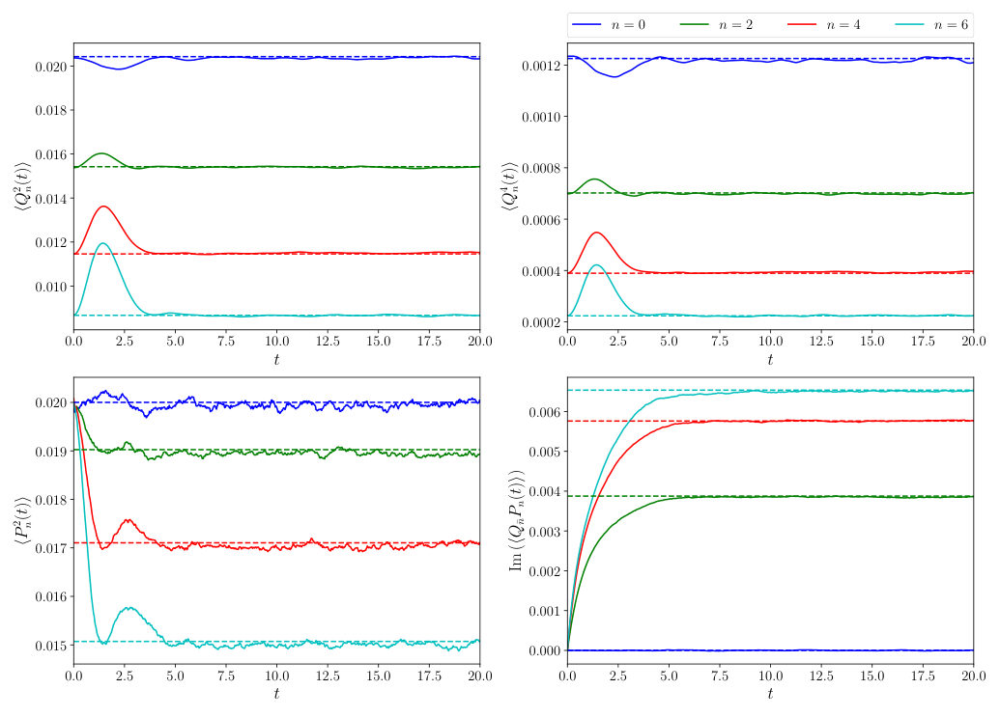
<figcaption class="paper-figure-caption"><b>Fig 1.</b> FIG. 1. The moments ⟨Q2 n(t)⟩, ⟨Q4 n(t)⟩, ⟨P 2 n(t)⟩and the imaginary component of ⟨Q¯nPn(t)⟩for a quartic oscillator coupled to a white bath following the dynamics of Eq. (50) from the initial distribution of Eq. (69) are plotted with solid lines. In the long-time limit, these match the corresponding moments of the quantum Boltzmann distribution of Eq. (42) which are plotted with dotted lines.</figcaption>
</figure>
</div>

<p><strong>Summary.</strong> This paper investigates simulating the thermalization of continuous-variable open quantum systems using stochastic classical trajectories within path-integral phase space. The authors demonstrate that these trajectories correctly equilibrate to the exact quantum equilibrium state by solving a derived Fokker-Planck Equation. This offers a novel, albeit numerically challenging, theoretical framework for modeling complex open quantum dynamics.</p>
<p><strong>Why it may be interesting.</strong> This work provides an alternative, trajectory-based methodology—stochastic classical paths in phase space—to simulate complex open quantum dynamics, which is valuable for developing new approximate simulation techniques beyond standard master equation approaches.</p>
<details>
<summary>Detailed structure</summary>
<p><strong>Main problem.</strong> The core problem is determining if stochastic classical trajectories evolving in path-integral phase space can correctly equilibrate an open quantum system to its exact thermal equilibrium state.</p>
<p><strong>Main result.</strong> The study finds that the stochastic trajectories generated via a Matsubara generalized Langevin equation successfully equilibrate to the exact quantum equilibrium state, recovering necessary imaginary momentum-position correlations.</p>
<p><strong>Method.</strong> The authors employ path-integral formulations and derive a corresponding Fokker-Planck Equation (FPE) from a generalized Langevin equation (GLE). They then analyze the stationary solution of this FPE.</p>
<p><strong>Model / system.</strong> The system is an open quantum system modeled by coupling a system Hamiltonian ($\hat{H}_s$) to a bath ($\hat{H}_b$) via $\hat{H}_{sb}$. The equilibrium state is analyzed using continuous-variable phase space path integrals in imaginary time.</p>
<p><strong>Key observables.</strong> The stationary solution of the FPE ($
ho_{stat}$), which must marginalize to the known quantum equilibrium distribution ($
ho_{eq}$).</p>
<p><strong>Important parameters / regimes.</strong> Temperature ($eta$), system frequency/potential ($V(q)$), and bath spectral density (e.g., Debye-Drude).</p>
<p><strong>Assumptions / limitations.</strong> The method relies on mapping non-Markovian dynamics to a Markovian FPE using auxiliary variables, although the resulting GLE itself is numerically unstable when evolved into the complex plane.</p>
<p><strong>Figures summary.</strong> Figures show convergence of moments (like $\langle Q^2_n(t) 
angle$) towards the quantum Boltzmann distribution moments, confirming equilibration.</p>
<p><strong>Paper structure.</strong> The paper develops the path-integral formulation for open systems, derives a generalized Langevin equation (GLE), maps this to a Markovian FPE using auxiliary variables, and finally solves/analyzes the stationary solution of the FPE to confirm agreement with known quantum equilibrium results.</p>
</details>
<details>
<summary>Abstract</summary>
<p>Beyond the weak-coupling limit, open quantum systems equilibrate to a highly entangled thermal state. For continuous-variable systems, this state can be written explicitly as an imaginary-time phase-space path integral, in which the positions are directly entangled with the bath, and the momenta are correlated with the positions through a phase term. Here, we ask to what extent this state can be reached by propagating stochastic classical trajectories in path-integral phase space. Surprisingly, we find that the trajectories equilibrate to the exact quantum equilibrium state, recovering the purely imaginary momentum-position correlation in the phase term. The trajectories are generated using a recently derived Matsubara generalized Langevin equation, which produces the imaginary correlations by evolving the stochastic variables into the complex plane. This makes the dynamics numerically unstable, but we are nonetheless able to demonstrate the equilibration of a quartic oscillator coupled to a white-noise bath. These unexpected findings could lead to new approximate methodologies for simulating continuous-variable open quantum systems.</p>
</details>
<p><sub><a href="#top">↑ back to top</a></sub></p>

<p><a id="paper-2606.11000"></a></p>
<h3 id="analog-quantum-asynchronous-event-based-graph-neural-network"><a href="http://arxiv.org/abs/2606.11000v1">Analog Quantum Asynchronous Event-Based Graph Neural Network</a></h3>
<p><strong>Authors:</strong> Kristian Sotirov, Shaheen Acheche, Antonio A. Gentile, Osvaldo Simeone<br>
<strong>Type:</strong> both · <strong>Category:</strong> other · <strong>PDF:</strong> <a href="https://arxiv.org/pdf/2606.11000v1">https://arxiv.org/pdf/2606.11000v1</a><br>
<strong>Analysis basis:</strong> full PDF text, analyzed in chunks
<strong>Topic relevance:</strong> 🔥 <code>Rydberg arrays</code> <strong>5/5</strong> · 🔥 <code>analog quantum simulation</code> <strong>4/5</strong> · <code>QC/QI experiment</code> <strong>2/5</strong> · <code>non-equilibrium dynamics</code> <strong>2/5</strong> · <code>driven-dissipative phase transition</code> <strong>1/5</strong> · <code>entanglement &amp; information structure</code> <strong>1/5</strong> · <code>methods for driven-dissipative</code> <strong>1/5</strong></p>
<div class="figure-strip-hint">↔ Scroll figures horizontally</div>
<div class="paper-figures-scroll">
<figure class="paper-figure-card">
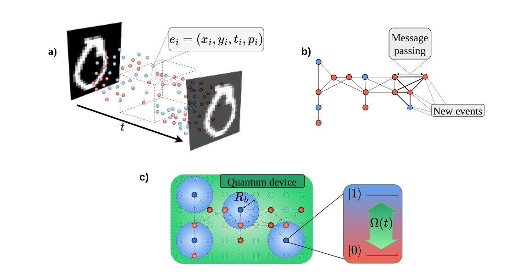
<figcaption class="paper-figure-caption"><b>Fig 1.</b> Fig. 1: (a) An event-driven sensor, such as a neuromorphic camera [3], produces a stream of events</figcaption>
</figure>
<figure class="paper-figure-card">
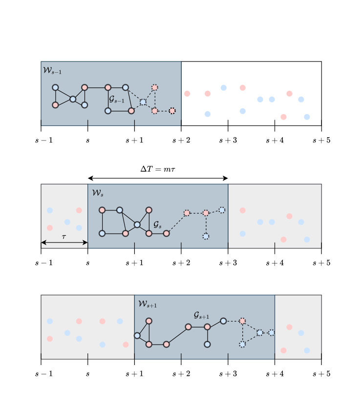
<figcaption class="paper-figure-caption"><b>Fig 2.</b> Fig. 2: Illustration of the time windows Ws−1, Ws, and Ws+1 of duration ∆T = mτ, used to process event</figcaption>
</figure>
<figure class="paper-figure-card">
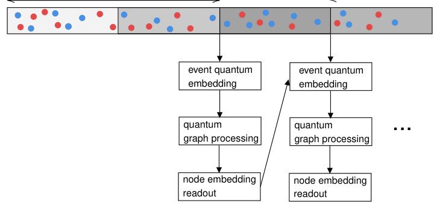
<figcaption class="paper-figure-caption"><b>Fig 3.</b> Fig. 3: Illustration of the timeline of the proposed QA-AEGNN. Inside each window with duration ∆T,</figcaption>
</figure>
<figure class="paper-figure-card">
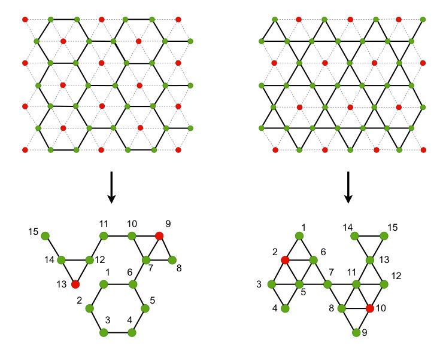
<figcaption class="paper-figure-caption"><b>Fig 4.</b> Fig. 4: Illustration of the graph classification task [12]: Graphs in each class are generated as shown in</figcaption>
</figure>
<figure class="paper-figure-card">
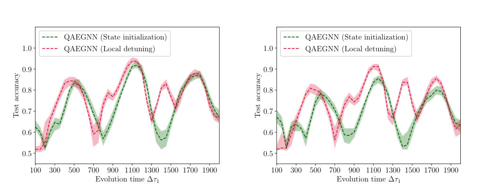
<figcaption class="paper-figure-caption"><b>Fig 5.</b> Fig. 5: Graph classification task: Training accuracy of QA-AEGNN on the polarity augmented dataset for</figcaption>
</figure>
</div>

<p><strong>Summary.</strong> The paper introduces QA-AEGNN, a novel framework that implements asynchronous event-based graph neural networks on neutral-atom quantum computers. By programming the Rydberg Hamiltonian to mimic message passing via controlled atomic interactions, it achieves an analog quantum computation of GNNs. This approach demonstrates high accuracy and robustness compared to classical methods for processing neuromorphic vision data.</p>
<p><strong>Why it may be interesting.</strong> This work directly applies complex many-body physics—specifically controlled Rydberg interactions—to solve a cutting-edge problem in AI/ML (event-based GNNs). It showcases how continuous Hamiltonian dynamics can serve as a powerful, native analog computational primitive for information processing beyond simple quantum gates.</p>
<details>
<summary>Detailed structure</summary>
<p><strong>Main problem.</strong> The core problem is developing an efficient quantum analog for processing sparse, high-temporal-resolution event data using Graph Neural Networks (GNNs). This requires mapping the asynchronous graph structure onto a controllable physical quantum system.</p>
<p><strong>Main result.</strong> The proposed Quantum Analog AEGNN (QA-AEGNN) successfully implements GNN message passing by programming the native Rydberg Hamiltonian dynamics of neutral atoms. It demonstrates superior performance compared to classical counterparts on both synthetic and neuromorphic datasets.</p>
<p><strong>Method.</strong> A hybrid quantum-classical training scheme is employed where analog Hamiltonian parameters are optimized classically. The graph computation is performed via time evolution governed by the Rydberg interaction, which naturally realizes message passing across physically placed atoms.</p>
<p><strong>Model / system.</strong> The system utilizes neutral-atom quantum processors with qubits encoded in ground/Rydberg states. The dynamics are governed by a programmable Rydberg Hamiltonian incorporating global drives, local detunings (for feature embedding), and strong pairwise van der Waals interactions ($V_{ij}$) that enforce graph connectivity via the Rydberg blockade.</p>
<p><strong>Key observables.</strong> Test accuracy on classification tasks (Graph Classification, N-MNIST); final observable feature vector $\mathbf{z}_s$ constructed as a histogram of excited atoms after quantum evolution.</p>
<p><strong>Important parameters / regimes.</strong> Rydberg blockade radius ($R_b$), Rabi frequency ($\Omega(t)$), local detuning parameters ($\delta_i(t)$), and the time evolution duration ($\Delta	au_s$).</p>
<p><strong>Assumptions / limitations.</strong> The physical placement of atoms must accurately map graph adjacency (neighbors within $R_b$) to ensure correct message passing. The framework assumes the ability to perform quantum state readout as a histogram.</p>
<p><strong>Figures summary.</strong> Figures illustrate the pipeline: event embedding $
ightarrow$ Hamiltonian evolution ($\Omega(t), R_b$) $
ightarrow$ Readout. Results compare QA-AEGNN vs AEGNN performance across different noise models and data types (e.g., Fig 6, Fig 7).</p>
<p><strong>Paper structure.</strong> The paper first establishes the need for quantum GNNs on event data. It details the physical mapping onto neutral atoms using the Rydberg Hamiltonian to simulate message passing. The methodology covers feature encoding (state initialization vs. detuning) and the hybrid training loop. Finally, performance is benchmarked against classical methods under various noise conditions.</p>
</details>
<details>
<summary>Abstract</summary>
<p>Asynchronous, event-based graph neural networks (AEGNNs) have recently emerged as an efficient paradigm for processing the sparse and high-temporal-resolution data from event cameras. In this paper, we propose quantum analog AEGNNs (QA-AEGNNs), a novel framework to implement an AEGNN on a neutral-atom quantum computer. Neutral-atom quantum processors offer a programmable analog quantum computing platform based on controllable Rydberg-atom interactions. To this end, we map the streaming event data to an array of trapped neutral atoms, where each atom represents a graph node (event) and is positioned such that geometric proximity reflects the spatio-temporal neighborhood of events. The native Rydberg Hamiltonian of the quantum processor is programmed to mirror the message-passing computations of the AEGNN, with atomic qubit states serving as node feature embeddings and inter-atom interactions realizing graph edges. Furthermore, we propose a hybrid quantum-classical training scheme in which the analog Hamiltonian parameters (e.g., laser pulse amplitudes and detunings) are optimized using classical feedback to learn the quantum AEGNN model from data. Our approach leverages the continuous Hamiltonian dynamics and massive parallelism of neutral-atom quantum systems to natively execute event-based graph computations with potential accuracy improvements</p>
</details>
<p><sub><a href="#top">↑ back to top</a></sub></p>

<p><a id="paper-2606.10510"></a></p>
<h3 id="single-photon-scattering-in-a-dissipative-superconducting-qubit-ssh-lattice-hybrid"><a href="http://arxiv.org/abs/2606.10510v1">Single-photon scattering in a dissipative superconducting-qubit--SSH lattice hybrid</a></h3>
<p><strong>Authors:</strong> Xiao-Xue Zhang, Jie Zhou, Xi-Zheng Zhang<br>
<strong>Type:</strong> theory · <strong>Category:</strong> quantum information and computing · <strong>PDF:</strong> <a href="https://arxiv.org/pdf/2606.10510v1">https://arxiv.org/pdf/2606.10510v1</a><br>
<strong>Analysis basis:</strong> full PDF text, analyzed in chunks
<strong>Topic relevance:</strong> 🔥 <code>analog quantum simulation</code> <strong>4/5</strong> · 🔥 <code>interference shaping light</code> <strong>4/5</strong> · <code>correlated / nonlocal dissipation</code> <strong>3/5</strong> · <code>correlated cavity matter</code> <strong>3/5</strong> · <code>driven-dissipative phase transition</code> <strong>3/5</strong> · <code>methods for driven-dissipative</code> <strong>3/5</strong> · <code>non-equilibrium dynamics</code> <strong>3/5</strong> · <code>Kondo &amp; dissipative impurity</code> <strong>2/5</strong> · <code>QC/QI experiment</code> <strong>2/5</strong> · <code>exotic spin models in light-matter</code> <strong>2/5</strong> · <code>non-equilibrium universality</code> <strong>2/5</strong> · <code>quantum optics experiment</code> <strong>2/5</strong> · <code>Keldysh / 2PI / non-Gaussian methods</code> <strong>1/5</strong> · <code>Tavis-Cummings &amp; cavity-many-emitter</code> <strong>1/5</strong> · <code>entanglement &amp; information structure</code> <strong>1/5</strong> · <code>measurement-induced transitions</code> <strong>1/5</strong> · <code>spintronics-quantum-optics interface</code> <strong>1/5</strong></p>
<div class="figure-strip-hint">↔ Scroll figures horizontally</div>
<div class="paper-figures-scroll">
<figure class="paper-figure-card">
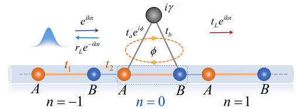
<figcaption class="paper-figure-caption"><b>Fig 1.</b> FIG. 1. Schematic illustration of a dissipative (or amplifying) superconducting qubit embedded in the center of the SSH lat- tice. Superconducting qubit simultaneously coupled to both sublattices A and B of the unit cell at position n = 0.</figcaption>
</figure>
<figure class="paper-figure-card">
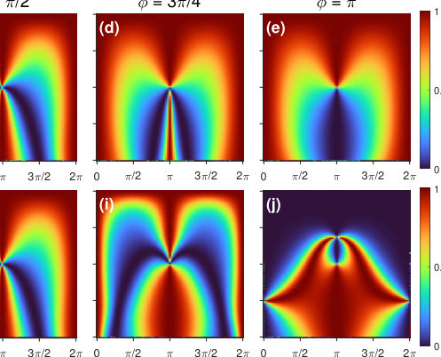
<figcaption class="paper-figure-caption"><b>Fig 2.</b> FIG. 2. Reflection landscape for the AB geometry in the Hermitian limit, t = 1 and γ = 0.</figcaption>
</figure>
<figure class="paper-figure-card">
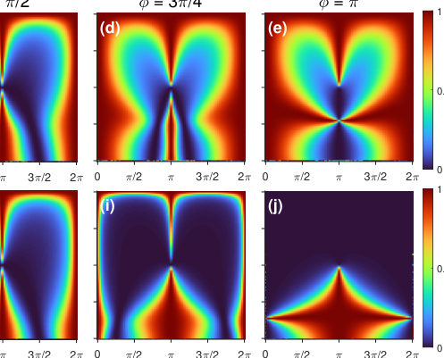
<figcaption class="paper-figure-caption"><b>Fig 3.</b> FIG. 3. Reflection landscape for weak gain, t = 1 and γ = 0.1.</figcaption>
</figure>
<figure class="paper-figure-card">
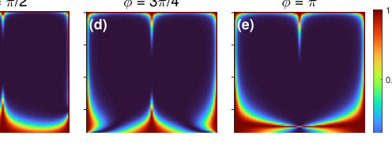
<figcaption class="paper-figure-caption"><b>Fig 4.</b> FIG. 4. Reflection landscape for stronger gain, t = 1 and γ = 0.3.</figcaption>
</figure>
<figure class="paper-figure-card">
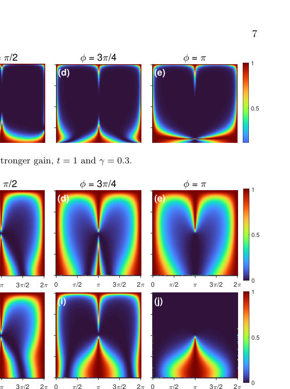
<figcaption class="paper-figure-caption"><b>Fig 5.</b> FIG. 5. Reflection landscape for weak loss, t = 1 and γ = −0.1.</figcaption>
</figure>
</div>

<p><strong>Summary.</strong> This paper develops a theoretical framework to analyze single-photon scattering in a hybrid system combining an SSH photonic lattice and a dissipative/amplifying superconducting qubit. By deriving the energy-dependent scattering matrix $S(E)$, the authors show that topological features (dimerization, flux) combined with non-Hermitian coupling allow for precise control over light transmission and reflection. This establishes a compact model for realizing tunable topological absorbers and amplifiers in quantum networks.</p>
<p><strong>Why it may be interesting.</strong> This work provides a concrete framework for engineering topological quantum devices by controlling light-matter interaction using superconducting circuits, directly relevant to photonic quantum information processing.</p>
<details>
<summary>Detailed structure</summary>
<p><strong>Main problem.</strong> The study investigates single-photon scattering dynamics when a topological photonic lattice (SSH) is locally coupled to a superconducting qubit exhibiting tunable loss or gain.</p>
<p><strong>Main result.</strong> The system's reflection and transmission spectra are highly controllable by tuning the SSH dimerization, synthetic magnetic flux, and the non-Hermitian coupling strength ($\gamma$).</p>
<p><strong>Method.</strong> The authors derived an explicit real-space scattering matrix $S(E)$ formulation and benchmarked its analytical results against time-domain wave-packet simulations.</p>
<p><strong>Model / system.</strong> The model combines a Su–Schrieffer–Heeger (SSH) photonic lattice Hamiltonian with a superconducting qubit Hamiltonian, leading to a total system governed by non-Hermitian dynamics in the single-excitation sector.</p>
<p><strong>Key observables.</strong> Reflection probability ($R$), Transmission probability ($T$), and the eigenvalues of the scattering matrix $S(E)$.</p>
<p><strong>Important parameters / regimes.</strong> SSH dimerization ($\delta$), synthetic gauge phase ($\Phi$), and the qubit non-Hermitian coupling magnitude $|\gamma|$ (controlling loss/gain).</p>
<p><strong>Assumptions / limitations.</strong> The analysis is restricted to the single-excitation sector, and the scattering problem is solved using asymptotic matching techniques.</p>
<p><strong>Figures summary.</strong> Figures illustrate reflection landscapes ($R^{(s)}_L$) vs. momentum $k$ for varying gain/loss ($\gamma$), wave-packet evolution in transmission/reflection regimes, and the eigenvalue spectrum of $S(E)$.</p>
<p><strong>Paper structure.</strong> The paper progresses from deriving the general scattering formalism to specializing it for the SSH lattice structure, finally incorporating the qubit scatterer and analyzing the resulting spectral features.</p>
</details>
<details>
<summary>Abstract</summary>
<p>We study single-photon scattering in a Su--Schrieffer--Heeger (SSH) photonic lattice locally coupled to a superconducting qubit with tunable loss or gain. Working in the single-excitation sector, we derive an explicit real-space scattering formulation for the full energy-dependent scattering matrix $S(E)$ and identify how its eigenvalues encode coherent perfect absorption, amplification, and spectral singular behavior. The analytical results are benchmarked against time-domain wave-packet simulations, which reproduce the stationary scattering probabilities with high accuracy. We show that the SSH dimerization, the qubit-induced non-Hermitian self-energy, and the synthetic gauge phase cooperate to reshape the reflection and transmission spectra in a highly selective way. In particular, changing the dimerization can switch the system between transmission-dominated and reflection-dominated regimes, while the flux provides a direct handle on interference and symmetry-controlled response. We also find a robust loss--gain correspondence in the reflection landscape and show that the linewidth broadening is governed predominantly by the magnitude $|γ|$ of the non-Hermitian coupling. These results establish a compact and experimentally relevant framework for topological scattering in superconducting quantum networks.</p>
</details>
<p><sub><a href="#top">↑ back to top</a></sub></p>

<p><a id="paper-2606.10585"></a></p>
<h3 id="anomalous-mobility-edges-and-extended-localized-transition-in-a-quasiperiodic-emitter-cavity-array"><a href="http://arxiv.org/abs/2606.10585v1">Anomalous mobility edges and extended-localized transition in a quasiperiodic emitter-cavity array</a></h3>
<p><strong>Authors:</strong> H. T. Cui, H. Z. Shen, M. Qin, X. X. Yi<br>
<strong>Type:</strong> theory · <strong>Category:</strong> disordered systems and neural networks · <strong>PDF:</strong> <a href="https://arxiv.org/pdf/2606.10585v1">https://arxiv.org/pdf/2606.10585v1</a><br>
<strong>Analysis basis:</strong> full PDF text, analyzed in chunks
<strong>Topic relevance:</strong> 🔥 <code>analog quantum simulation</code> <strong>4/5</strong> · 🔥 <code>driven-dissipative phase transition</code> <strong>4/5</strong> · <code>Tavis-Cummings &amp; cavity-many-emitter</code> <strong>3/5</strong> · <code>correlated cavity matter</code> <strong>3/5</strong> · <code>methods for driven-dissipative</code> <strong>3/5</strong> · <code>non-equilibrium universality</code> <strong>3/5</strong> · <code>correlated / nonlocal dissipation</code> <strong>2/5</strong> · <code>non-equilibrium dynamics</code> <strong>2/5</strong> · <code>Frenkel-Kontorova</code> <strong>1/5</strong> · <code>Keldysh / 2PI / non-Gaussian methods</code> <strong>1/5</strong> · <code>Kondo &amp; dissipative impurity</code> <strong>1/5</strong> · <code>entanglement &amp; information structure</code> <strong>1/5</strong></p>
<div class="figure-strip-hint">↔ Scroll figures horizontally</div>
<div class="paper-figures-scroll">
<figure class="paper-figure-card">
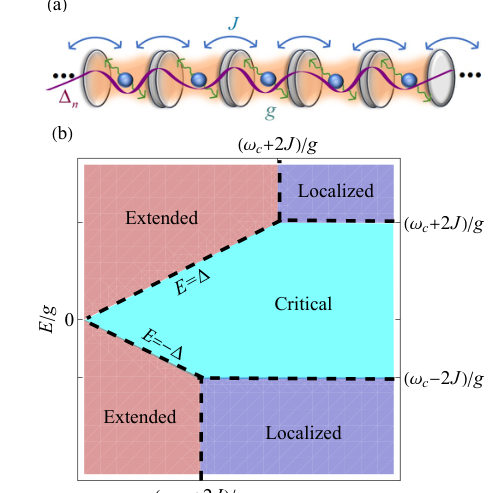
<figcaption class="paper-figure-caption"><b>Fig 1.</b> Figure 1. (Color online) (a) Schematic for the emitter-cavity chain described by Eq. (1). Blue spheres denote the emitters. The purple wave line represents the quasiperiodic potentials imposed on emitters. The blue curves with two arrows depicts the hopping of photon. Green wave line denotes the coupling between emitter and cavity. (b) The phase diagram deter- mined by evaluating the localization feature of the effective energy levels for the emitters. The dashed-black lines mark the boundaries between extended (orange), localized (blue) and critical (cyan) phases. The physical meaning for all sym- bols can be found in the maintext.</figcaption>
</figure>
<figure class="paper-figure-card">
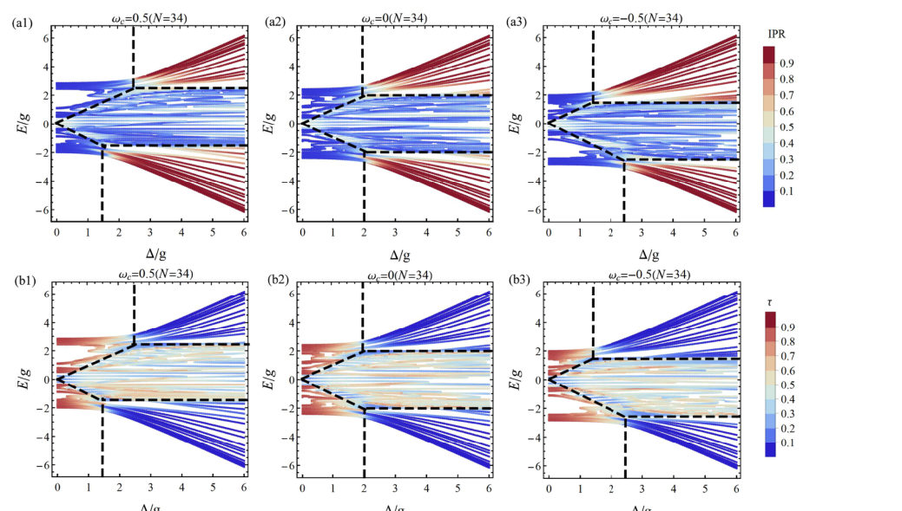
<figcaption class="paper-figure-caption"><b>Fig 2.</b> Figure 2. (Color online) Comparative diagrams of the inverse participation ratio (a1)-(a3) and the fractal dimension (b1)-(b3) are presented for the bound state function αs under ωc = 0.5, 0, −0.5 respectively. The dashed-black lines represent the mobility edges Ec or the critical values ∆c, defined by Eq. (9). In all figures, E and ∆are scaled in units of g. All numerical calculations adopt fixed parameters N = 34 and g = 1.</figcaption>
</figure>
<figure class="paper-figure-card">
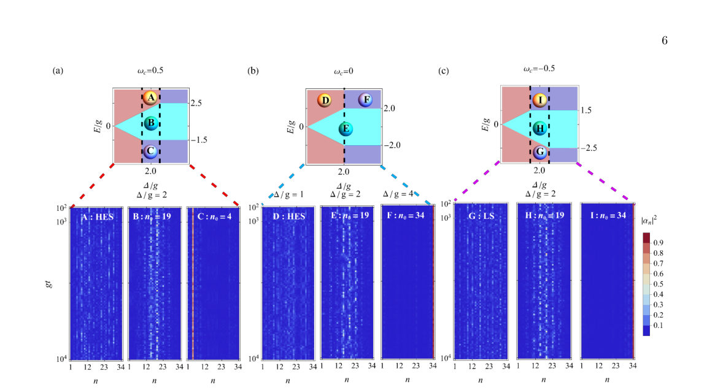
<figcaption class="paper-figure-caption"><b>Fig 3.</b> Figure 3. (Color online) The long-term temporal evolution of αn(t) for selected initial states, located initially at the extended, localized and critical regions in the phase diagram. The value of n0 = 4, 19, 34 denotes the initial site of excitation in emitters, where ∆4/∆= −0.985, ∆19/∆= −0.046 and ∆34/∆= 0.997. Thus, the value of ∆decides the position of initial state in the phase diagram. The ”HES” denotes the highest excited bound state, while ”LS” denotes the lowest bound state. N = 34 and g = 1 are chosen for all plots.</figcaption>
</figure>
</div>

<p><strong>Summary.</strong> The paper analyzes single excitation transport in quasiperiodic emitter-cavity arrays, showing that dissipation can induce anomalous mobility edges. By linking localization to the nature of bound states (discrete vs. continuum), they construct a full phase diagram. This demonstrates that quantum excitation localization can be precisely controlled by tuning only the cavity field parameters.</p>
<p><strong>Why it may be interesting.</strong> This work provides a detailed theoretical framework for controlling quantum transport in structured media, directly relevant to designing artificial photonic or solid-state quantum simulators where disorder/quasiperiodicity is key.</p>
<details>
<summary>Detailed structure</summary>
<p><strong>Main problem.</strong> The study investigates how dissipation induces anomalous mobility edges and extended-localized transitions in quasiperiodic emitter-cavity arrays.</p>
<p><strong>Main result.</strong> The localization properties are governed by the nature of quantum bound states (Discrete vs. Continuum), allowing for full phase diagram construction solely by tuning cavity fields.</p>
<p><strong>Method.</strong> Analytical determination using generalized duality transformations, combined with calculating effective Hamiltonians derived from eliminating cavity degrees of freedom.</p>
<p><strong>Model / system.</strong> The system is a one-dimensional array of two-level emitters coupled to an array of single-mode cavities via a quasiperiodic onsite potential. The dynamics are analyzed in the single excitation subspace using $H = H_s + H_c + H_{int}$.</p>
<p><strong>Key observables.</strong> Inverse Participation Ratio (IPR), Fractal Dimension ($    au$), and long-time population $|\alpha_n(t)|^2$ of bound states.</p>
<p><strong>Important parameters / regimes.</strong> Quasiperiodic potential strength ($\Delta$), cavity central frequency ($\omega_c$), coupling strength ($g$), and energy level ($E$).</p>
<p><strong>Assumptions / limitations.</strong> The analysis is restricted to the single excitation subspace, and approximations like the rotating-wave approximation are used.</p>
<p><strong>Figures summary.</strong> Figures show phase diagrams mapping extended, localized, and critical phases based on parameters; other figures illustrate $|\alpha_n|^2$ and IPR variations across these predicted mobility edges.</p>
<p><strong>Paper structure.</strong> The paper establishes the effective Hamiltonian by eliminating cavity modes, uses duality transformations to find anomalous mobility edges analytically, maps out a full phase diagram (Fig. 1(b)), and verifies localization regimes using long-time dynamics simulations.</p>
</details>
<details>
<summary>Abstract</summary>
<p>The manipulation of localization in quasiperiodic systems by mobility edges or localization transition holds significant physical importance. In this letter, we demonstrated that the dissipation can induce the emergence of anomalous mobility edges and extended-localized transition in emitter-cavity arrays controlled by quasiperiodic potentials. Specifically, we observe that the localization properties of emitters is governed by the nature of quantum bound states, either discrete or embedded in continuum, providing a unified mechanism linking the emitter-photon bound physics to quasiperiodic criticality. Depending on the bound state discrete or continuumlike, the induced effective excitation hopping exhibits either exponentially decaying or sinusoidally oscillating, giving rise to the formation of localized or critical states, respectively. Through a generalized duality transformation, we analytically determine the anomalous mobility edges and the critical strength of potential, enabling the construction of a full phase diagram. The study reveals that the physical characteristics of cavity exert a significant influence on excitation localization. Therefore, the manipulation of excitation localization can be achieved solely by adjusting the cavity fields.</p>
</details>
<p><sub><a href="#top">↑ back to top</a></sub></p>

<p><a id="paper-2606.11060"></a></p>
<h3 id="interplay-between-photon-condensation-and-electron-electron-interactions-in-molecular-systems"><a href="http://arxiv.org/abs/2606.11060v1">Interplay between photon condensation and electron-electron interactions in molecular systems</a></h3>
<p><strong>Authors:</strong> Matteo Parisi, Elisabetta Paladino, Giuseppe A. Falci, Gian Marcello Andolina, Salvatore Savasta, Marco Polini, Francesco M. D. Pellegrino<br>
<strong>Type:</strong> theory · <strong>Category:</strong> other · <strong>PDF:</strong> <a href="https://arxiv.org/pdf/2606.11060v1">https://arxiv.org/pdf/2606.11060v1</a><br>
<strong>Analysis basis:</strong> full PDF text, analyzed in chunks
<strong>Topic relevance:</strong> 🔥 <code>analog quantum simulation</code> <strong>4/5</strong> · 🔥 <code>correlated cavity matter</code> <strong>4/5</strong> · <code>Tavis-Cummings &amp; cavity-many-emitter</code> <strong>3/5</strong> · <code>driven-dissipative phase transition</code> <strong>3/5</strong> · <code>methods for driven-dissipative</code> <strong>3/5</strong> · <code>Dicke superradiance</code> <strong>2/5</strong> · <code>Keldysh / 2PI / non-Gaussian methods</code> <strong>2/5</strong> · <code>superradiant laser</code> <strong>2/5</strong> · <code>correlated / nonlocal dissipation</code> <strong>1/5</strong> · <code>entanglement &amp; information structure</code> <strong>1/5</strong> · <code>exotic spin models in light-matter</code> <strong>1/5</strong> · <code>non-equilibrium dynamics</code> <strong>1/5</strong> · <code>non-equilibrium universality</code> <strong>1/5</strong></p>
<div class="figure-strip-hint">↔ Scroll figures horizontally</div>
<div class="paper-figures-scroll">
<figure class="paper-figure-card">
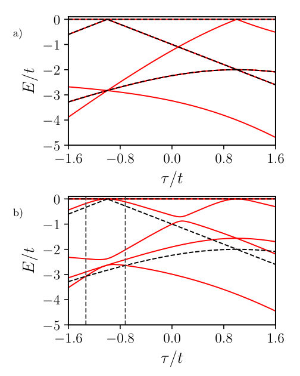
<figcaption class="paper-figure-caption"><b>Fig 1.</b> FIG. 1. a) Low energy spectrum for Ne = 2 of a square molecule (ns = 4), in the absence of repulsive electron- electron interaction. b) Low-energy spectrum for the same molecular system, now with U/t = 1. The vertical dashed lines at τ1 ≈−1.33t and τ2 ≈−0.72t mark the bound- aries where the ground state becomes a three-fold degener- ate triplet state. In both panels, red solid lines represent the eigenenergies of the singlet states (S = 0), while the black dashed lines refer to triplet states (S = 1).</figcaption>
</figure>
<figure class="paper-figure-card">
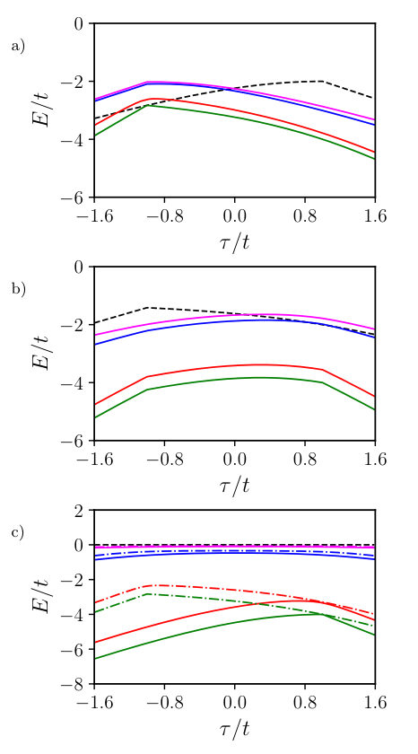
<figcaption class="paper-figure-caption"><b>Fig 2.</b> FIG. 2. The lowest eigenenergy, for a square molecular pla- quette with ns = 4, as a function of τ/t, for U = 0 (red), U/t = 1 (green), U/t = 20 (blue), and U/t = 100 (magenta). a) Ne = 2 electrons per molecule, the solid lines represent the lowest eigenenergy within the subspaces S, and the minimal eigenenergy in the subspaces Ti (i = 0, ±1) is ϵ0 + ϵ1 (black dashed line), independently of i. b) Ne = 3 electrons per molecule, the solid lines indicate the lowest eigenenergy within the subspaces Di (i = ±1/2), while the minimum eigenenergy within the subspaces Qi (where i = ±1/2, ±3/2) is denoted as ϵ0 (black dashed line), independently of i. c) Half-filling case, Ne = 4, colored lines refer...</figcaption>
</figure>
<figure class="paper-figure-card">
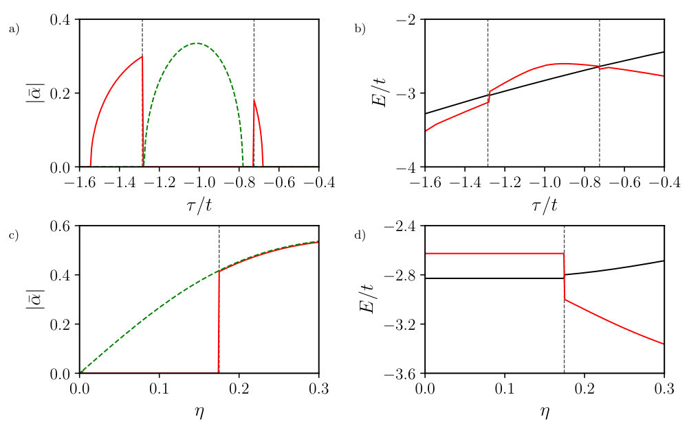
<figcaption class="paper-figure-caption"><b>Fig 3.</b> FIG. 3. Photon condensation of square molecular plaquettes with Ne = 2 electrons. a) [c)] The photon condensate order parameter ¯α is plotted as a function of τ/t [η], by setting ωc = t and η = 0.13 [τ = −t]. The red solid line denotes U/t = 1, and the green dashed line refers to U = 0. Furthermore, in c), the dashed gray vertical line at η∗≈0.17 indicates the value where ¯α becomes non-zero with a jump discontinuity. b) [d)] Low-energy spectrum of the generic k-th molecule, characterized by ˆHMF,k(¯α), is considered with ¯α determined under the conditions ωc = t, η = 0.13 [τ = −t], and U/t = 1. The red and black solid lines indicate the lowest eigenenergies in the subspaces S and T,...</figcaption>
</figure>
<figure class="paper-figure-card">
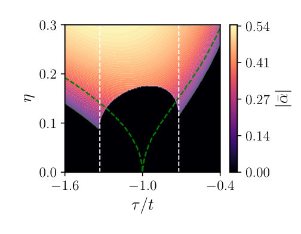
<figcaption class="paper-figure-caption"><b>Fig 4.</b> FIG. 4. Photonic order parameter |¯α| as a function of τ/t and the light-matter coupling strength η, with Ne = 2 electrons and setting ωc = t. The color map represents the case with U/t = 1. The green dashed line indicates the critical val- ues of the microscopic parameters τ and η, where the phase transition occurs without the influence of electron-electron in- teraction U. The vertical white dashed lines at τ1 ≈−1.33t and τ2 ≈−0.72t denote the range [τ1, τ2], within which the ground state for η = 0 is a degenerate triplet.</figcaption>
</figure>
<figure class="paper-figure-card">
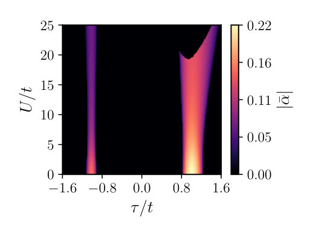
<figcaption class="paper-figure-caption"><b>Fig 5.</b> FIG. 5. Photon condensation of square molecular plaquettes with Ne = 3 electrons. The photon condensate order param- eter |¯α| is plotted as a function of τ/t and U/t, by setting ωc = t and η = 0.12. The sharp boundary between the nor- mal and photon condensate phase in the upper right corner signals a first order phase transition.</figcaption>
</figure>
</div>

<p><strong>Summary.</strong> This paper models photon condensation in molecular systems by coupling electrons to an electromagnetic cavity mode. It rigorously incorporates on-site Coulomb repulsion via the Hubbard term, demonstrating that this interaction can drive the system into a first-order phase transition regime, contrasting with simpler non-interacting predictions.</p>
<p><strong>Why it may be interesting.</strong> This work directly addresses cavity QED phenomena (photon condensation/superradiance) in realistic, correlated solid-state or molecular settings, providing a detailed mechanism for how electron correlations modify fundamental quantum optical transitions.</p>
<details>
<summary>Detailed structure</summary>
<p><strong>Main problem.</strong> The study investigates the complex interplay between photon condensation (a magnetostatic instability) and electron-electron interactions within molecular quantum systems.</p>
<p><strong>Main result.</strong> The inclusion of Hubbard repulsion can fundamentally change the nature of the phase transition, allowing for a first-order transition in regimes where non-interacting models predict only second-order transitions.</p>
<p><strong>Method.</strong> The analysis employs mean-field theory coupled with exact diagonalization techniques on small molecular plaquettes to analyze energy functionals and order parameters.</p>
<p><strong>Model / system.</strong> The model consists of multiple identical square planar plaquettes hosting electrons, described by a tight-binding Hamiltonian augmented by an on-site Hubbard repulsion term ($U$). This system is coupled to a spatially nonuniform cavity mode.</p>
<p><strong>Key observables.</strong> Photon condensate order parameter ($ar{\alpha}$), polaritonic excitation energies, and the character (first vs. second order) of the phase transition.</p>
<p><strong>Important parameters / regimes.</strong> Electron filling factor ($N_e$), Hubbard repulsion strength ($U/t$), light-matter coupling strength ($\eta$), and hopping parameters ($   au/t$).</p>
<p><strong>Assumptions / limitations.</strong> The analysis relies on mean-field decoupling for light-matter coupling, and in some parts, approximations like Holstein-Primakoff transformations are used to linearize the Hamiltonian around the mean-field state.</p>
<p><strong>Figures summary.</strong> Figures illustrate the order parameter $ar{\alpha}$ versus hopping ratio ($  au/t$) showing discontinuities (first-order) or smooth changes (second-order), and plot polaritonic energies revealing spectral signatures of the instability.</p>
<p><strong>Paper structure.</strong> The paper builds from defining the coupled Hamiltonian, analyzing the single-molecule electronic structure using SU(2) symmetry, deriving a mean-field effective Hamiltonian for light-matter coupling, and finally determining the phase transition order by examining energy functionals and polaritonic spectra.</p>
</details>
<details>
<summary>Abstract</summary>
<p>We investigate a minimal molecular model consisting of square planar plaquettes hosting multiple electrons, whose dynamics is governed by a tight-binding Hamiltonian supplemented by on-site Hubbard repulsion. By coupling this system to a spatially nonuniform cavity mode, we analyze the emergence of a magnetostatic instability, namely photon condensation, originating from the paramagnetic Van Vleck mechanism. The global behavior of the system is analyzed for different electronic filling factors, and we find that, except for the special cases of half-filling and single electron, where the transition, if it occurs, is necessarily a second order phase transition, the global system may also undergo a first order transition because of the action of the electron-electron interaction. The polaritonic excitation energies are analyzed, providing clear spectroscopic signatures of the magnetostatic instability and of its order.</p>
</details>
<p><sub><a href="#top">↑ back to top</a></sub></p>

<p><a id="paper-2606.10145"></a></p>
<h3 id="beyond-the-markovian-limit-exact-solutions-for-active-motion-in-a-power-law-viscoelastic-bath"><a href="http://arxiv.org/abs/2606.10145v1">Beyond the Markovian limit: Exact solutions for active motion in a power-law viscoelastic bath</a></h3>
<p><strong>Authors:</strong> Mintu Karmakar, Jure Dobnikar, Ignacio Pagonabarraga<br>
<strong>Type:</strong> theory · <strong>Category:</strong> statistical mechanics · <strong>PDF:</strong> <a href="https://arxiv.org/pdf/2606.10145v1">https://arxiv.org/pdf/2606.10145v1</a><br>
<strong>Analysis basis:</strong> full PDF text, analyzed in chunks
<strong>Topic relevance:</strong> 🔥 <code>Keldysh / 2PI / non-Gaussian methods</code> <strong>4/5</strong> · <code>correlated / nonlocal dissipation</code> <strong>3/5</strong> · <code>driven-dissipative phase transition</code> <strong>3/5</strong> · <code>methods for driven-dissipative</code> <strong>3/5</strong> · <code>non-equilibrium dynamics</code> <strong>3/5</strong> · <code>non-equilibrium universality</code> <strong>3/5</strong> · <code>Frenkel-Kontorova</code> <strong>2/5</strong> · <code>analog quantum simulation</code> <strong>2/5</strong> · <code>Kondo &amp; dissipative impurity</code> <strong>1/5</strong> · <code>entanglement &amp; information structure</code> <strong>1/5</strong> · <code>scars &amp; prethermalization</code> <strong>1/5</strong></p>
<div class="figure-strip-hint">↔ Scroll figures horizontally</div>
<div class="paper-figures-scroll">
<figure class="paper-figure-card">
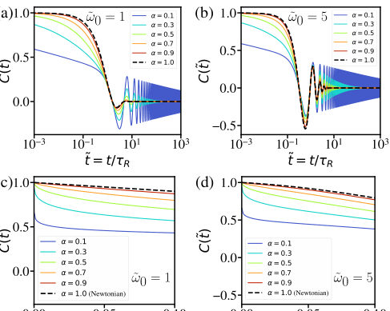
<figcaption class="paper-figure-caption"><b>Fig 1.</b> FIG. 1. (Color online) Orientational correlation function 𝐶(˜𝑡) = ⟨ˆ𝑛(˜𝑡) · ˆ𝑛(0)⟩as a function of dimensionless time ˜𝑡= 𝑡/𝜏𝑅for different memory exponents 𝛼= 𝛼𝑅= 𝛼𝑇. (a) Moderate intrinsic angular velocity ˜𝜔0 = 1. (b) Strong intrinsic angular velocity ˜𝜔0 = 5. The dashed black curve corresponds to the Newtonian limit (𝛼= 1), which exhibits exponential decay. For 𝛼&lt; 1, the decay becomes stretched exponential, producing long-lived orientational persistence. Increasing memory (smaller 𝛼) enhances the lifetime of oscillatory correlations without altering the intrinsic oscillation frequency. (c,d) Corresponding short-time behaviour of 𝐶(˜𝑡) in a linear scale exhibits rapid decay from 1 for...</figcaption>
</figure>
<figure class="paper-figure-card">
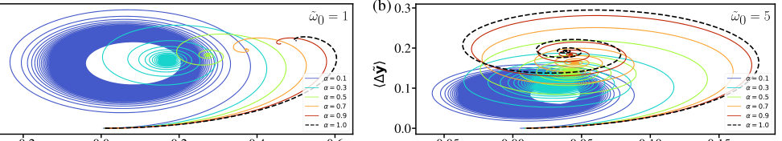
<figcaption class="paper-figure-caption"><b>Fig 2.</b> FIG. 2. (Color online) Mean trajectory of a circle swimmer in the (⟨Δ˜x(˜𝑡)⟩, ⟨Δ˜y(˜𝑡)⟩) plane for different memory exponents 𝛼= 𝛼𝑅= 𝛼𝑇. (a) ˜𝜔0 = 1. (b) ˜𝜔0 = 5. The dashed black curve corresponds to the Newtonian case (𝛼= 1). Stronger viscoelastic memory (smaller 𝛼) enhances orientational coherence and enlarges spiral excursions.</figcaption>
</figure>
<figure class="paper-figure-card">
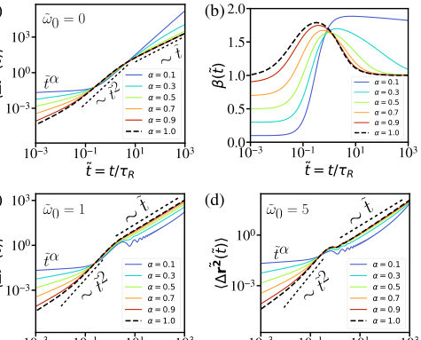
<figcaption class="paper-figure-caption"><b>Fig 3.</b> FIG. 3. (Color online) (a,b) Mean-square displacement ⟨Δ ˜r2(˜𝑡)⟩and the corresponding dynamical exponent 𝛽(˜𝑡) for different memory ex- ponents 𝛼= 𝛼𝑅= 𝛼𝑇for non-circling swimmer ( ˜𝜔0 = 0). ⟨Δ ˜r2(˜𝑡)⟩ for circling swimmer (c) ˜𝜔0 = 1. (d) ˜𝜔0 = 5. The dashed black curves denote the Newtonian limit (𝛼= 1). Pe = 10. Translational memory produces fractional short-time scaling (∼˜𝑡𝛼𝑇), while ro- tational memory prolongs ballistic motion and enhances oscillatory transport signatures for chiral swimmers.</figcaption>
</figure>
<figure class="paper-figure-card">
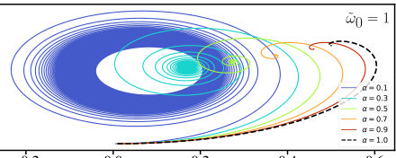
<figcaption class="paper-figure-caption"><b>Fig 4.</b> Figure 3 shows the The MSD ⟨Δ˜r2(˜𝑡)⟩and the corresponding dynamical exponent</figcaption>
</figure>
<figure class="paper-figure-card">
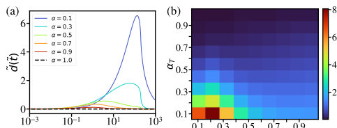
<figcaption class="paper-figure-caption"><b>Fig 5.</b> FIG. 5. (Color online) (a) Delay function ˜𝑑(˜𝑡) for different memory exponents 𝛼= 𝛼𝑅= 𝛼𝑇. The delay vanishes in the Newtonian limit (𝛼= 1) and develops a pronounced peak as memory strengthens. (b) Peak delay 𝑑peak = max[ ˜𝑑(˜𝑡)] in the (𝛼𝑅, 𝛼𝑇) plane. The delay is maximized when both translational and rotational memory are strong, demonstrating cooperative enhancement of force-orientation lag.</figcaption>
</figure>
</div>

<p><strong>Summary.</strong> This paper provides an analytical theory for active particles moving in viscoelastic fluids whose friction dynamics are described by power-law memory. By solving non-Markovian Langevin equations, the authors predict novel phenomena like stretched exponential decay of orientation and a measurable time-delay between propulsion force and particle direction. This framework is crucial for understanding biological swimmers in complex polymeric environments.</p>
<p><strong>Why it may be interesting.</strong> While focused on soft matter, the mathematical framework of solving coupled, non-Markovian GLEs with power-law memory kernels is directly applicable to modeling open quantum systems where environmental dissipation (bath interaction) exhibits anomalous or long-range correlations.</p>
<details>
<summary>Detailed structure</summary>
<p><strong>Main problem.</strong> The study addresses active particle motion in viscoelastic media, moving beyond simplified Markovian friction models that fail to capture complex relaxation dynamics.</p>
<p><strong>Main result.</strong> The theory derives analytical expressions showing that the memory kernel controls anomalous scaling exponents and introduces a measurable time-delay between propulsion force and swimmer orientation.</p>
<p><strong>Method.</strong> The authors developed an analytical framework by solving coupled, non-Markovian Generalized Langevin Equations (GLEs) for translational and rotational motion.</p>
<p><strong>Model / system.</strong> The model describes a self-propelled microswimmer moving in a 2D viscoelastic bath characterized by power-law memory kernels ($\Gamma(t) \sim t^{-\alpha}$). The dynamics are governed by coupled GLEs incorporating both activity ($v_0$) and viscoelastic damping.</p>
<p><strong>Key observables.</strong> Orientational Correlation Function $C(	ilde{t})$, Mean-Square Displacement (MSD), and the Memory Delay Function $d(t)$.</p>
<p><strong>Important parameters / regimes.</strong> Memory exponents ($\alpha_T, \alpha_R$), activity strength ($Pe$), and intrinsic rotation frequency ($\omega_0$). The key regimes include $\alpha=1$ (Newtonian) versus $0 < \alpha < 1$ (power-law memory).</p>
<p><strong>Assumptions / limitations.</strong> The analysis operates in the overdamped limit, assumes zero-mean Gaussian noise processes consistent with the Fluctuation-Dissipation Theorem.</p>
<p><strong>Figures summary.</strong> Figures illustrate the stretched exponential decay of $C(	ilde{t})$ for $\alpha < 1$, and show the dependence of the memory delay function $d(t)$ on the viscoelastic exponents ($\alpha_R, \alpha_T$).</p>
<p><strong>Paper structure.</strong> The paper develops the GLEs, solves them using Laplace transforms to find correlation functions ($C(t)$), derives expressions for $\langle\Delta r(t)
angle$ and MSD, and finally analyzes the non-Markovian coupling via the memory delay function $d(t)$.</p>
</details>
<details>
<summary>Abstract</summary>
<p>Active particles from bacteria to synthetic microswimmers often navigate viscoelastic media with complex relaxation dynamics. The classical active Brownian model that assumes instantaneous friction is clearly not applicable to describe such motility, while the non-Markovian processes combined with viscoelasticity are relatively unexplored. Here, we develop an analytical theory for an active particle in a power-law viscoelastic medium by solving coupled non-Markovian generalized Langevin equations for translational and rotational degrees of freedom. The viscoelastic memory results in novel phenomena such as fractional short-time transport, enhanced long-time persistence, and de-correlation of the instantaneous force and the swimmer orientation. We demonstrate that the memory kernel controls the anomalous scaling exponents, while the activity determines the crossover between sub-diffusive, ballistic and diffusive regimes. Our work provides a framework for theoretical description of biological and synthetic micro swimmers in complex biological and polymeric environments.</p>
</details>
<p><sub><a href="#top">↑ back to top</a></sub></p>

<p><a id="paper-2606.10529"></a></p>
<h3 id="precision-measurements-at-the-interface-between-unitary-and-non-unitary-encoding"><a href="http://arxiv.org/abs/2606.10529v1">Precision measurements at the interface between unitary and non-unitary encoding</a></h3>
<p><strong>Authors:</strong> Peng Xu<br>
<strong>Type:</strong> theory · <strong>Category:</strong> other · <strong>PDF:</strong> <a href="https://arxiv.org/pdf/2606.10529v1">https://arxiv.org/pdf/2606.10529v1</a><br>
<strong>Analysis basis:</strong> full PDF text, analyzed in chunks
<strong>Topic relevance:</strong> 🔥 <code>methods for driven-dissipative</code> <strong>4/5</strong> · <code>Keldysh / 2PI / non-Gaussian methods</code> <strong>3/5</strong> · <code>correlated / nonlocal dissipation</code> <strong>3/5</strong> · <code>driven-dissipative phase transition</code> <strong>3/5</strong> · <code>entanglement &amp; information structure</code> <strong>3/5</strong> · <code>non-equilibrium dynamics</code> <strong>2/5</strong> · <code>non-equilibrium universality</code> <strong>2/5</strong> · <code>Kondo &amp; dissipative impurity</code> <strong>1/5</strong> · <code>analog quantum simulation</code> <strong>1/5</strong> · <code>measurement-induced transitions</code> <strong>1/5</strong> · <code>quantum measurements</code> <strong>1/5</strong></p>
<div class="figure-strip-hint">↔ Scroll figures horizontally</div>
<div class="paper-figures-scroll">
<figure class="paper-figure-card">
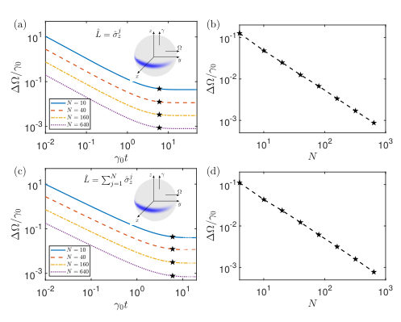
<figcaption class="paper-figure-caption"><b>Fig 1.</b> FIG. 1. Precision dynamics for various N under single- particle dephasing (a) and collective dephasing (c). The ini- tial state is the optimal two-axis twisted state with ⟨ˆJx⟩∝N and ⟨∆ˆJz⟩∝1. (a, c) The optimal encoding time t, indicated by pentagrams at the maximum curvature, is independent of N. (b, d) The precision scaling at the optimal time exhibits the Heisenberg scaling ∆Ω∝1/N. The dissipation rate is γ/γ0 = 0.1. The energy and time units are γ0 and γ−1 0 , re- spectively.</figcaption>
</figure>
<figure class="paper-figure-card">
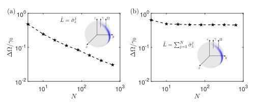
<figcaption class="paper-figure-caption"><b>Fig 2.</b> FIG. 2. Precision scaling at the optimal encoding time for var- ious N under single-particle dephasing (a) and collective de- phasing (b). The initial state is the optimal two-axis twisted state with ⟨ˆJy⟩∝N and ⟨∆ˆJx⟩∝1. The precision scaling degrades to ∆Ω∝1/ √</figcaption>
</figure>
<figure class="paper-figure-card">
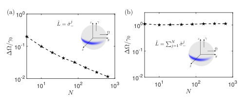
<figcaption class="paper-figure-caption"><b>Fig 3.</b> FIG. 3. Precision scaling at the optimal encoding time for var- ious N under single-particle decay (a) and collective decay (b). The initial state is the optimal two-axis twisted state with ⟨ˆJx⟩∝N and ⟨∆ˆJz⟩∝1. The precision scaling degrades to ∆Ω∝1/ √</figcaption>
</figure>
<figure class="paper-figure-card">
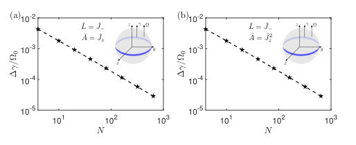
<figcaption class="paper-figure-caption"><b>Fig 4.</b> FIG. 5. Precision scaling at the optimal encoding time for different total particle number N under non-unitary encoding ˆL = ˆJ−with intrinsic dynamics ˆA = ˆJz (a) or ˆA = ˆJ2 z (b), where the observable is ˆO = ˆJz. The initial state is the Dicke state |N, 0⟩z with eigenvalue 0 of ˆJz. The precision scales as the Heisenberg limit ∆γ ∝1/N. Ω/Ω0 = 0.1 for the intrinsic dynamics. The energy and the time units are Ω0 and Ω−1 0 , respectively.</figcaption>
</figure>
<figure class="paper-figure-card">
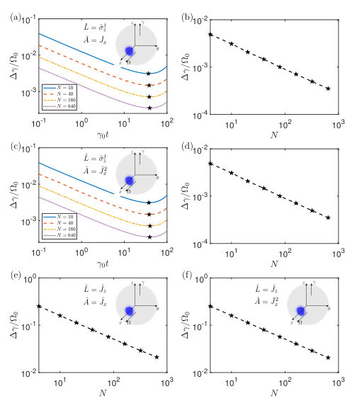
<figcaption class="paper-figure-caption"><b>Fig 5.</b> FIG. 4. Precision dynamics for various N under non-unitary encoding with ˆL = ˆσj z, ˆO = ˆJx, and intrinsic dynamics ˆA = ˆJx (a) and ˆA = ˆJ2 x (c). The initial state is the eigenstate of ˆJx with eigenvalue N. The precision scaling at the optimal time, indicated by pentagrams at the maximum curvature, yields ∆γ ∝1/ √</figcaption>
</figure>
</div>

<p><strong>Summary.</strong> This paper develops a unified theory for quantum metrology under generalized noise, analyzing parameter estimation for both unitary and non-unitary dynamics. It derives analytic scaling laws showing that Heisenberg limited precision ($\propto 1/N$) is achievable in specific noisy regimes, even when dissipation is present. The findings offer practical guidance for designing robust quantum sensing protocols.</p>
<p><strong>Why it may be interesting.</strong> This work provides crucial theoretical benchmarks for designing quantum sensors in realistic noisy environments by quantifying when entanglement can overcome decoherence to reach fundamental precision limits.</p>
<details>
<summary>Detailed structure</summary>
<p><strong>Main problem.</strong> The paper investigates how the precision of quantum parameter estimation scales when the encoding process transitions between unitary (coherent) and non-unitary (dissipative/noisy) dynamics.</p>
<p><strong>Main result.</strong> Heisenberg scaling ($\propto 1/N$) can be achieved for both unitary and non-unitary estimations if specific commutation relations hold, demonstrating entanglement's role in enhancing metrology even under noise.</p>
<p><strong>Method.</strong> The authors employ linear response theory and the error propagation formula to derive analytic precision expressions, supplemented by numerical validation using the Discrete Truncated Wigner Approximation (DTWA).</p>
<p><strong>Model / system.</strong> The model involves quantum systems subjected to generalized noise, including single-particle and collective dephasing/decay. Dynamics are governed by non-Hermitian Hamiltonians incorporating both intrinsic evolution ($\Omega$) and dissipation ($\gamma$).</p>
<p><strong>Key observables.</strong> Precision scaling for the unitary parameter $\Delta\Omega$ and the dissipation strength $\Delta\gamma$.</p>
<p><strong>Important parameters / regimes.</strong> System size $N$, noise rates ($\gamma$), encoding time ($t$), and commutation relations between observables and noise operators.</p>
<p><strong>Assumptions / limitations.</strong> The derivations rely on linear response theory, cumulant expansions, and approximations up to first order in the noise parameters.</p>
<p><strong>Figures summary.</strong> Figures illustrate precision dynamics for both unitary and non-unitary regimes, confirming Heisenberg scaling ($\propto 1/N$) under optimal conditions but showing degradation towards Standard Quantum Limit (SQL) or constant values otherwise.</p>
<p><strong>Paper structure.</strong> The paper develops a unified framework by deriving analytic expressions for $\Delta\Omega$ and $\Delta\gamma$. It analyzes specific noise types (single-particle vs. collective) and compares the scaling laws based on whether observables commute with noise operators, providing practical guidance for protocol design.</p>
</details>
<details>
<summary>Abstract</summary>
<p>We investigate precision scaling at the interface between unitary and non-unitary encoding under generalized noise including single-particle and collective dephasing and decay. Using linear response theory and the error propagation formula, we derive analytic precision expressions for both the unitary parameter $Ω$ and the dissipation strength $γ$. For unitary encoding, when the observable commutes with a Hermitian noise operator, the optimal encoding time is independent of $N$, yielding the Heisenberg limit $ΔΩ\propto 1 / N$; otherwise the precision degrades to the standard quantum limit or ceases to improve with $N$. For non-unitary encoding, when $[\hat{A}, \hat{O}] = 0$, the precision is insensitive to intrinsic dynamics and encoding time, scaling as $Δγ\propto \sqrt{γ/ \expval*{\hat{L}^\dagger \hat{L}}}$. Notably, for collective decay, the Dicke state reaches the Heisenberg limit $Δγ\propto 1 / N$, demonstrating that entanglement can enhance non-unitary estimation. Our results provide a unified framework and practical guidance for designing quantum metrology protocols in noisy environments.</p>
</details>
<p><sub><a href="#top">↑ back to top</a></sub></p>

<p><a id="paper-2606.11002"></a></p>
<h3 id="revealing-the-topology-of-quantum-states-via-kirkwood-dirac-quasiprobabilities"><a href="http://arxiv.org/abs/2606.11002v1">Revealing the topology of quantum states via Kirkwood-Dirac quasiprobabilities</a></h3>
<p><strong>Authors:</strong> Stefano Gherardini, Luca Lepori<br>
<strong>Type:</strong> theory · <strong>Category:</strong> other · <strong>PDF:</strong> <a href="https://arxiv.org/pdf/2606.11002v1">https://arxiv.org/pdf/2606.11002v1</a><br>
<strong>Analysis basis:</strong> full PDF text, analyzed in chunks
<strong>Topic relevance:</strong> 🔥 <code>quantum measurements</code> <strong>4/5</strong> · <code>interference shaping light</code> <strong>3/5</strong> · <code>measurement-induced transitions</code> <strong>3/5</strong> · <code>analog quantum simulation</code> <strong>2/5</strong> · <code>entanglement &amp; information structure</code> <strong>2/5</strong> · <code>non-equilibrium dynamics</code> <strong>2/5</strong> · <code>non-equilibrium universality</code> <strong>2/5</strong> · <code>Keldysh / 2PI / non-Gaussian methods</code> <strong>1/5</strong> · <code>correlated / nonlocal dissipation</code> <strong>1/5</strong> · <code>driven-dissipative phase transition</code> <strong>1/5</strong> · <code>exotic spin models in light-matter</code> <strong>1/5</strong> · <code>methods for driven-dissipative</code> <strong>1/5</strong></p>
<div class="figure-strip-hint">↔ Scroll figures horizontally</div>
<div class="paper-figures-scroll">
<figure class="paper-figure-card">
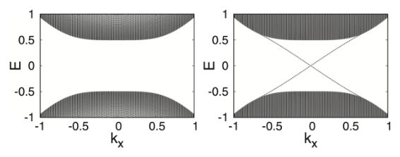
<figcaption class="paper-figure-caption"><b>Fig 1.</b> Figure 1: Energy spectra of the Hamiltonian in Eq. (4) at M = 1, for periodic boundary conditions (left panel) and with open boundary conditions along y (right panel), respectively. In the right panel, gapless edge modes, topologically protected and interpolating between the two bands, are present.</figcaption>
</figure>
<figure class="paper-figure-card">
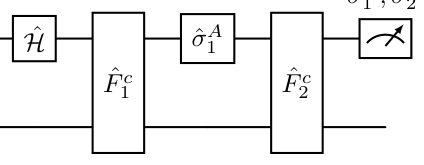
<figcaption class="paper-figure-caption"><b>Fig 2.</b> Figure 4: Pictorial representation of the interferometric scheme that realizes the measurement of the real and imaginary parts of Gk(u).</figcaption>
</figure>
</div>

<p><strong>Summary.</strong> The paper introduces a novel diagnostic tool to detect the topology of many-body quantum states by analyzing 'strange correlators.' It achieves this by showing these correlators can be expressed as sums over Kirkwood-Dirac quasiprobabilities (KDQs). The ultimate goal is proposing an interferometric protocol that allows experimental measurement of these topological signatures.</p>
<p><strong>Why it may be interesting.</strong> This work provides a rigorous theoretical bridge between abstract topological invariants and measurable quantum correlation functions using quasiprobability formalisms, which is highly relevant for designing next-generation quantum sensing protocols.</p>
<details>
<summary>Detailed structure</summary>
<p><strong>Main problem.</strong> The central goal is developing a theoretical method to distinguish between different topological classes of quantum states in many-body systems.</p>
<p><strong>Main result.</strong> The authors propose using 'strange correlators,' which can be mathematically decomposed into Kirkwood-Dirac quasiprobabilities (KDQs), forming a measurable quantum topology witness.</p>
<p><strong>Method.</strong> The approach links strange correlators to KDQs, interpreting them as weak values of an observable governing the transition between trivial and topological phases. This link is then exploited via interferometric protocols.</p>
<p><strong>Model / system.</strong> The analysis applies to general many-body quantum systems exhibiting topological order, with specific examples including the 2D Chern insulator (BHZ model) and AKLT chains. The dynamics are often analyzed through sudden quench transformations or time evolution under perturbations.</p>
<p><strong>Key observables.</strong> Strange correlators ($s[\hat{o}]$), Kirkwood-Dirac quasiprobabilities ($q_{k,j}$), and the characteristic function $G(u)$ measured via quantum interferometry.</p>
<p><strong>Important parameters / regimes.</strong> The scaling behavior of strange correlators with momentum/distance ($|k|^{-\alpha}$ vs $|k|^{eta}$) is key to determining topology. The validity of linear response theory depends on time scales relative to energy gaps ($\Delta$ and $V_0$).</p>
<p><strong>Assumptions / limitations.</strong> The analysis relies heavily on establishing the mathematical equivalence between strange correlators and sums over KDQs, and proposing an interferometric measurement scheme for reconstruction.</p>
<p><strong>Figures summary.</strong> Figures illustrate spectral properties (BHZ model), the dependence of quasiprobability modulus $|q(kx)|$ on topological assumptions, and schematic diagrams of the quantum interferometry protocol used to measure correlation functions.</p>
<p><strong>Paper structure.</strong> The paper progresses from defining strange correlators and KDQs, establishing their mathematical link, applying this framework to specific models (like BHZ), deriving linear response relations for the imaginary part of the correlator, and finally detailing an experimental/interferometric protocol for measurement.</p>
</details>
<details>
<summary>Abstract</summary>
<p>We discuss a theoretical approach to discriminate whether two states of a many-body quantum system belong or not to different topology classes. This approach is based on expressing a strange correlator - a recently established tool for quantum topology discrimination - between the states as a function of Kirkwood-Dirac quasiprobabilities (KDQs). KDQs provide a first-principles representation of two-time quantum correlators. The link between strange correlators and KDQs allows to establish that strange correlators are weak values of an observable converting an initial trivial state into a topologically non-trivial one. We thus propose a quantum topology witness that is achievable measuring the prior and subsequent effects on a many-body system of a sudden quench transformation that realizes the transition between trivial and topological phases. The witness is evaluated on a probe quantum state whose main features are detailed within the paper. Finally, directly exploiting schemes that allows for the complete reconstruction of KDQs, we address an interferometric protocol for topology discrimination, along with a general discussion of the main lines and challenges towards its implementation.</p>
</details>
<p><sub><a href="#top">↑ back to top</a></sub></p>

<p><a id="paper-2606.10731"></a></p>
<h3 id="the-two-dimensional-dynamical-bulk-boundary-correspondence-beyond-two-band-models"><a href="http://arxiv.org/abs/2606.10731v1">The Two Dimensional Dynamical Bulk Boundary Correspondence: Beyond Two Band Models</a></h3>
<p><strong>Authors:</strong> Tomasz Masłowski, Nicholas Sedlmayr<br>
<strong>Type:</strong> theory · <strong>Category:</strong> statistical mechanics · <strong>PDF:</strong> <a href="https://arxiv.org/pdf/2606.10731v1">https://arxiv.org/pdf/2606.10731v1</a><br>
<strong>Analysis basis:</strong> full PDF text, analyzed in chunks
<strong>Topic relevance:</strong> 🔥 <code>non-equilibrium dynamics</code> <strong>4/5</strong> · 🔥 <code>non-equilibrium universality</code> <strong>4/5</strong> · <code>analog quantum simulation</code> <strong>3/5</strong> · <code>driven-dissipative phase transition</code> <strong>3/5</strong> · <code>methods for driven-dissipative</code> <strong>3/5</strong> · <code>entanglement &amp; information structure</code> <strong>2/5</strong> · <code>Keldysh / 2PI / non-Gaussian methods</code> <strong>1/5</strong> · <code>correlated / nonlocal dissipation</code> <strong>1/5</strong> · <code>scars &amp; prethermalization</code> <strong>1/5</strong></p>
<div class="figure-strip-hint">↔ Scroll figures horizontally</div>
<div class="paper-figures-scroll">
<figure class="paper-figure-card">
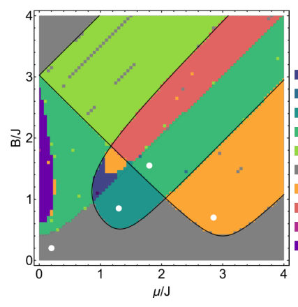
<figcaption class="paper-figure-caption"><b>Fig 1.</b> FIG. 1. The topological phase diagram for the topological superconductor [104], Eq. (7), with α = 0.4J and ∆= 0.4J. White circles are the points in the phase diagram between which we quench, see table I.</figcaption>
</figure>
<figure class="paper-figure-card">
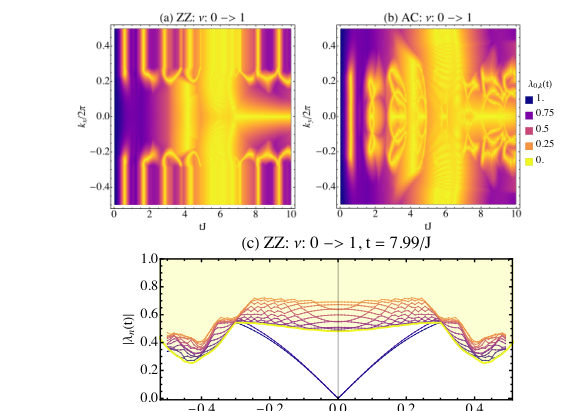
<figcaption class="paper-figure-caption"><b>Fig 2.</b> FIG. 2. In panels (a,b) the lowest Loschmidt eigenvalue λ0,k(t) as a function of momentum and time is plotted. This is calculated for a system of size 102 × 100 unit cells in the open and periodic directions respectively for both zig-zag (ZZ, panel a) and armchair (AC, panel b) edges. Panel (c) shows a cut at a particular time for the zig-zag edges with the lowest 12 eigenvalues λn,k(t) and the lowest bulk eigenvalue calcu- lated for periodic boundary conditions (N = 2002) giving the limit of the shaded region. In (a,b) the bulk critical regions appear as vertically orientated curved bright lines, and the lowest eigenvalue of the band of eigenvalues crossing the gap appear as horizontally...</figcaption>
</figure>
<figure class="paper-figure-card">
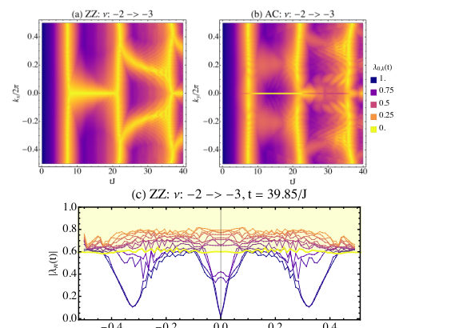
<figcaption class="paper-figure-caption"><b>Fig 3.</b> FIG. 3. In panels (a,b) the lowest Loschmidt eigenvalue λ0,k(t) as a function of momentum and time is plotted for both zig-zag (a) and armchair (b) edges. Panel (c) shows a cut at a particular time for the zig-zag edges with the lowest 12 eigenvalues λn,k(t) and the lowest bulk eigenvalue. See Fig. 2 and table I for more details. See the main text for a discussion of the results.</figcaption>
</figure>
<figure class="paper-figure-card">
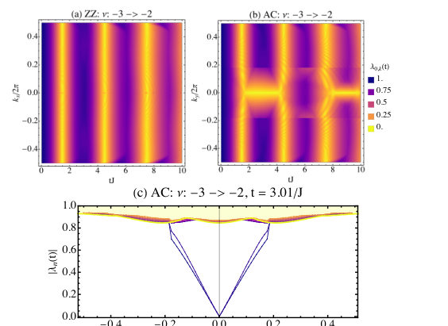
<figcaption class="paper-figure-caption"><b>Fig 4.</b> FIG. 4. In panels (a,b) the lowest Loschmidt eigenvalue λ0,k(t) as a function of momentum and time is plotted for both zig-zag (a) and armchair (b) edges. Panel (c) shows a cut at a particular time for the armchair edges with the low- est 12 eigenvalues λn,k(t) and the lowest bulk eigenvalue. See Fig. 2 and table I for more details. See the main text for a discussion of the results.</figcaption>
</figure>
<figure class="paper-figure-card">
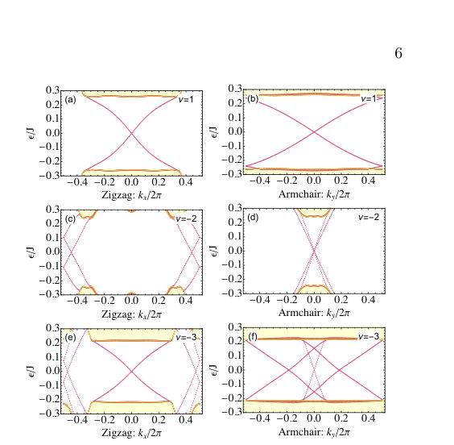
<figcaption class="paper-figure-caption"><b>Fig 5.</b> FIG. 5. Bandstructure examples for the model, (7), where α = 0.4J and ∆= 0.4J and further parameters are as in table I. The topologically protected bands can be seen crossing the gap, Chern numbers ν are as marked on the figures. Note as this is a chiral system left moving and right moving bands are on opposite edges of the system.</figcaption>
</figure>
</div>

<p><strong>Summary.</strong> This paper investigates the dynamical bulk-boundary correspondence in 2D topological superconductors after sudden quenches. Using the Loschmidt amplitude as a diagnostic tool, the authors tested this concept across various topological phase transitions. They conclude that the dynamic correspondence is not simply dictated by the initial and final equilibrium Chern numbers, suggesting a more nuanced, edge-dependent topological structure.</p>
<p><strong>Why it may be interesting.</strong> This work bridges non-equilibrium quantum dynamics (Loschmidt echo) with topological invariants (Chern numbers), providing a complex, quantitative test case for extending bulk-boundary principles into time evolution.</p>
<details>
<summary>Detailed structure</summary>
<p><strong>Main problem.</strong> The research investigates a dynamical equivalent of the bulk-boundary correspondence (DBBC) for topological models subjected to sudden quenches, extending beyond simple two-band descriptions.</p>
<p><strong>Main result.</strong> The authors find that there is no straightforward correlation between the equilibrium phases quenched between and the observed dynamical bulk-boundary correspondence. Furthermore, this correspondence can depend on the specific orientation of the edges, suggesting a weak topological variant.</p>
<p><strong>Method.</strong> The analysis relies on calculating the Loschmidt amplitude/return rate ($\ell(t)$) and identifying Dynamical Quantum Phase Transitions (DQPTs) where these quantities become non-analytic or exhibit zero eigenvalues in the Loschmidt matrix spectrum.</p>
<p><strong>Model / system.</strong> The primary model studied is a complicated two-dimensional topological superconductor defined on a honeycomb lattice, allowing quenches between states characterized by different Chern numbers ($
u$).</p>
<p><strong>Key observables.</strong> Loschmidt amplitude/return rate ($\ell(t)$), Loschmidt eigenvalues ($\lambda_{n,k}(t)$), and the system's Chern number ($
u$).</p>
<p><strong>Important parameters / regimes.</strong> The quench path between initial and final topological phases (e.g., $
u: 0    o 1$ or $
u: -2   o -3$), and the geometry of the edges (armchair vs. zig-zag).</p>
<p><strong>Assumptions / limitations.</strong> The analysis is performed in a cylindrical geometry, which may limit direct applicability to physical systems with single open edges; the exact cause and generality of the phenomenon remain unknown.</p>
<p><strong>Figures summary.</strong> Figures plot the lowest Loschmidt eigenvalue $\lambda_{0,k}(t)$ vs. momentum/time for various quenches on different edge types (AC/ZZ), illustrating where in-gap modes appear near DQPTs; Figure 6 shows the return rate derivative ($\dot{l}(t)$) across quench paths.</p>
<p><strong>Paper structure.</strong> The paper establishes the theoretical framework of DBBC, applies it to a complex 2D topological superconductor model undergoing quenches between different Chern number sectors, and concludes by detailing specific results showing deviations from simple equilibrium predictions based on edge orientation.</p>
</details>
<details>
<summary>Abstract</summary>
<p>A dynamical equivalent of the bulk-boundary correspondence has been suggested to occur in one and two dimensional topological models following sudden quenches. Depending on the topological invariant of the time evolving and initial phases involved large boundary contributions to a dynamical free energy occur. Moreover they occur periodically between the critical times at which this dynamical free energy becomes non-analytic, \emph{i.e.}~at dynamical quantum phase transitions. At these critical times the eigenvalue spectrum of the Loschmidt matrix which underlies the dynamical free energy closes its gap. The boundary contributions are understood to be due to zero-modes or in-gap bands of this matrix, forming a close analogy with equilibrium topological models and their edge modes. The exact cause of this phenomena and its generality remain unknown. In this article we test the dynamical bulk-boundary correspondence for a complicated two dimensional topological superconductor with a rich phase diagram, allowing quenches between many different Chern numbers. We show that there is no straightforward correspondence between the equilibrium phases quenched between and the dynamical bulk boundary correspondence. Furthermore the correspondence can depend on the orientation of the edges, suggesting a possible weak topological variant.</p>
</details>
<p><sub><a href="#top">↑ back to top</a></sub></p>

<p><a id="paper-2606.10319"></a></p>
<h3 id="nonreciprocal-photon-blockade-in-an-asymmetric-cavity"><a href="http://arxiv.org/abs/2606.10319v1">Nonreciprocal Photon Blockade in an Asymmetric Cavity</a></h3>
<p><strong>Authors:</strong> Shao-Xiong Wu, Jin-Na Fan, Dan Yan, Cheng-Hua Bai, Qiannan Wu, Mengwei Li<br>
<strong>Type:</strong> theory · <strong>Category:</strong> other · <strong>PDF:</strong> <a href="https://arxiv.org/pdf/2606.10319v1">https://arxiv.org/pdf/2606.10319v1</a><br>
<strong>Analysis basis:</strong> full PDF text, analyzed in chunks
<strong>Topic relevance:</strong> 🔥 <code>interference shaping light</code> <strong>4/5</strong> · <code>Keldysh / 2PI / non-Gaussian methods</code> <strong>3/5</strong> · <code>driven-dissipative phase transition</code> <strong>3/5</strong> · <code>methods for driven-dissipative</code> <strong>3/5</strong> · <code>Tavis-Cummings &amp; cavity-many-emitter</code> <strong>2/5</strong> · <code>non-equilibrium dynamics</code> <strong>2/5</strong> · <code>analog quantum simulation</code> <strong>1/5</strong> · <code>correlated / nonlocal dissipation</code> <strong>1/5</strong> · <code>correlated cavity matter</code> <strong>1/5</strong> · <code>non-equilibrium universality</code> <strong>1/5</strong></p>
<div class="figure-strip-hint">↔ Scroll figures horizontally</div>
<div class="paper-figures-scroll">
<figure class="paper-figure-card">
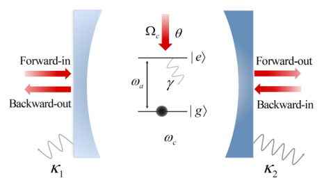
<figcaption class="paper-figure-caption"><b>Fig 1.</b> FIG. 1: Schematic of the system. A two-level atom is trapped inside an asymmetric Fabry-P´erot cavity, the cavity is driven by a coher- ent laser and the atom is pumped by a control laser with the same frequency. When the driving laser is injected from the left mirror toward the right, it is defined as the forward case, and the backward case corresponds to the opposite propagating direction. By adjust- ing the control laser, the photons exhibit photon antibunching in the forward case and bunching behaviour in the backward case, i.e., the nonreciprocal PB effect.</figcaption>
</figure>
<figure class="paper-figure-card">
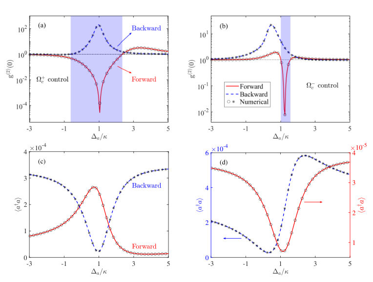
<figcaption class="paper-figure-caption"><b>Fig 2.</b> FIG. 2: The second-order correlation function g(2)(0) and the mean intracavity photon number ⟨a†a⟩as functions of the atomic detuning ∆a. Panels (a) and (c) correspond to the optimal control condition Ω+ c , while panels (b) and (d) represent the optimal control condition Ω− c . Red solid lines and blue dashed lines denote the analytical results derived via the probability amplitude method for the forward and backward cases, respectively. Black circles o and asterisks ∗mean the corresponding numerical solutions obtained from the quantum master equation.</figcaption>
</figure>
<figure class="paper-figure-card">
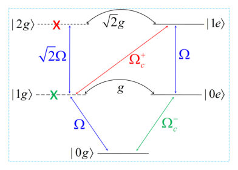
<figcaption class="paper-figure-caption"><b>Fig 3.</b> FIG. 3: Schematic of the energy-level structure and the transition pathways. The blue arrows denote transitions induced by the driving field, while the red/green arrow represents the pumping by the con- trol condition Ω+ c or Ω− c .</figcaption>
</figure>
<figure class="paper-figure-card">
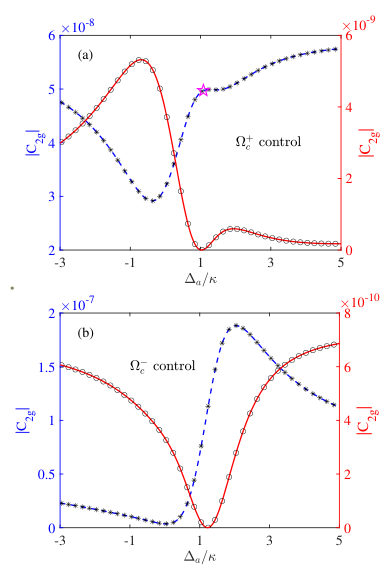
<figcaption class="paper-figure-caption"><b>Fig 4.</b> FIG. 4: The population of two-photon state |2g⟩as a function of the atomic detuning ∆a. Panel (a) corresponds to the optimal control condition Ω+ c , and panel (b) to Ω− c control. The parameters are cho- sen those in Fig. 2.</figcaption>
</figure>
<figure class="paper-figure-card">
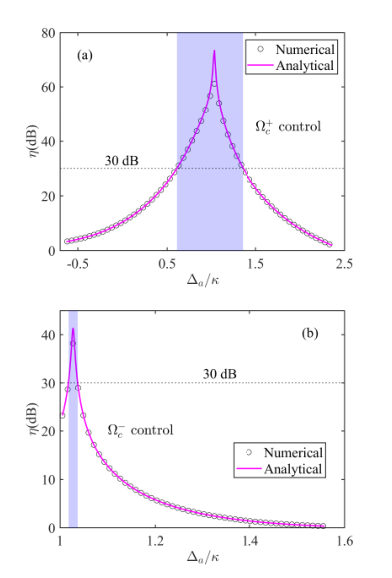
<figcaption class="paper-figure-caption"><b>Fig 5.</b> FIG. 5: The nonreciprocal ratio η as a function of the atomic detuning ∆a. Panel (a) corresponds to the optimal control condition Ω+ c , and panel (b) to Ω− c control. The light-blue regions indicate that η &gt; 30 dB. The parameters are chosen those in Fig. 2.</figcaption>
</figure>
</div>

<p><strong>Summary.</strong> The authors propose using an asymmetric cavity QED system driven by two lasers to achieve strong nonreciprocal photon blockade. By carefully tuning the control laser's phase and amplitude, they engineer destructive quantum interference pathways. This results in robust antibunching (blockade) when light propagates forward, while observing bunching backward, demonstrating a high degree of directional control.</p>
<p><strong>Why it may be interesting.</strong> This work provides a highly practical theoretical blueprint for generating directional quantum light sources, which is crucial for advancing quantum networking and measurement protocols that require time-reversal symmetry breaking.</p>
<details>
<summary>Detailed structure</summary>
<p><strong>Main problem.</strong> The primary goal is realizing tunable and strong nonreciprocal photon blockade (PB) within an asymmetric Fabry-Pérot cavity.</p>
<p><strong>Main result.</strong> Strong nonreciprocal PB, with a ratio exceeding 30 dB, is achieved by engineering quantum interference pathways using an auxiliary control laser field.</p>
<p><strong>Method.</strong> The analysis employs a phenomenological non-Hermitian Hamiltonian approach and utilizes the weak-driving regime approximation to solve for time evolution in a truncated Hilbert space.</p>
<p><strong>Model / system.</strong> The system is a single-mode optical cavity trapping a two-level atom, driven by a coherent laser ($\Omega$) and controlled by an auxiliary field ($\Omega_c$). The asymmetry is inherent in the cavity decay rates ($\kappa_1 
eq \kappa_2$).</p>
<p><strong>Key observables.</strong> Second-order photon correlation function ($g^{(2)}(0)$) to diagnose blockade (antibunching, $g^{(2)}<1$) and nonreciprocal ratio ($\eta = -10 \log_{10} (g^{(2)}_f(0)/g^{(2)}_b(0))$).</p>
<p><strong>Important parameters / regimes.</strong> Control field amplitude ($\Omega_c$), relative phase ($ heta$), cavity decay rate ($\kappa$), and detunings ($\Delta_c, \Delta_a$).</p>
<p><strong>Assumptions / limitations.</strong> The analysis relies on the weak-driving regime approximation ($\{\Omega, \Omega_c\} \ll \kappa$) and a truncated Hilbert space up to three excitations.</p>
<p><strong>Figures summary.</strong> Figures illustrate the system setup, schematic pathways for quantum interference (for $\Omega_+^c$ vs $\Omega_-^c$), $g^{(2)}(0)$ dependence on control parameters, and time-delayed correlation functions ($g^{(2)}(	au)$) showing distinct forward (PB) and backward (bunching) behavior.</p>
<p><strong>Paper structure.</strong> The paper develops the non-Hermitian Hamiltonian model, applies weak-driving approximations to derive coupled differential equations for probability amplitudes, solves for steady-state observables like $g^{(2)}(0)$, and finally compares two optimal control conditions ($\Omega_+^c$ vs $\Omega_-^c$) to quantify the resulting nonreciprocity.</p>
</details>
<details>
<summary>Abstract</summary>
<p>We propose a scheme to realize tunable and strong nonreciprocal photon blockade (PB) in an asymmetric Fabry-Pérot cavity. The setup consists of a single-mode optical cavity trapping a two-level atom, with the cavity coherently driven by a laser and the atom pumped by an auxiliary control field of the same frequency. By engineering quantum interference between multiple excitation pathways by adjusting the amplitude and relative phase of the control laser, we identify two distinct optimal control conditions that enable directional suppression of two-photon states. Under optimal control conditions, strong nonreciprocal PB is achieved, with a nonreciprocal ratio exceeding 30 dB over a broad operational bandwidth. The proposed protocol requires only standard coherent laser sources and is compatible with current cavity QED experimental setups, offering a practical and scalable platform for nonreciprocal quantum photonics.</p>
</details>
<p><sub><a href="#top">↑ back to top</a></sub></p>

<p><a id="paper-2606.09984"></a></p>
<h3 id="tame-the-umklapp-processes-in-real-time-lattice-simulation-for-hydrodynamics-an-ising-field-theory-study"><a href="http://arxiv.org/abs/2606.09984v1">Tame the Umklapp Processes in Real-Time Lattice Simulation for Hydrodynamics: An Ising Field Theory Study</a></h3>
<p><strong>Authors:</strong> Xiaojun Yao<br>
<strong>Type:</strong> theory · <strong>Category:</strong> statistical mechanics · <strong>PDF:</strong> <a href="https://arxiv.org/pdf/2606.09984v1">https://arxiv.org/pdf/2606.09984v1</a><br>
<strong>Analysis basis:</strong> full PDF text, analyzed in chunks
<strong>Topic relevance:</strong> 🔥 <code>non-equilibrium dynamics</code> <strong>4/5</strong> · <code>methods for driven-dissipative</code> <strong>3/5</strong> · <code>non-equilibrium universality</code> <strong>3/5</strong> · <code>Keldysh / 2PI / non-Gaussian methods</code> <strong>2/5</strong> · <code>analog quantum simulation</code> <strong>2/5</strong> · <code>driven-dissipative phase transition</code> <strong>2/5</strong> · <code>Frenkel-Kontorova</code> <strong>1/5</strong> · <code>correlated / nonlocal dissipation</code> <strong>1/5</strong> · <code>entanglement &amp; information structure</code> <strong>1/5</strong> · <code>exotic spin models in light-matter</code> <strong>1/5</strong> · <code>scars &amp; prethermalization</code> <strong>1/5</strong></p>
<div class="figure-strip-hint">↔ Scroll figures horizontally</div>
<div class="paper-figures-scroll">
<figure class="paper-figure-card">
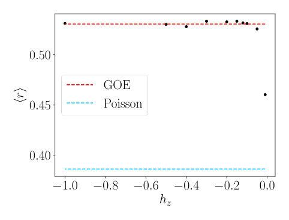
<figcaption class="paper-figure-caption"><b>Fig 1.</b> FIG. 2. Expected values of restricted gap ratios calculated on the L = 20 lattice with ξlat = 0.01 as a function of hz. The middle 70% eigenenergies in the spectrum of the nk = 1 sector are used. The red dashed line is the GOE prediction 0.5307 while the blue dashed line is the value obtained from a Poisson distribution 0.3863.</figcaption>
</figure>
<figure class="paper-figure-card">
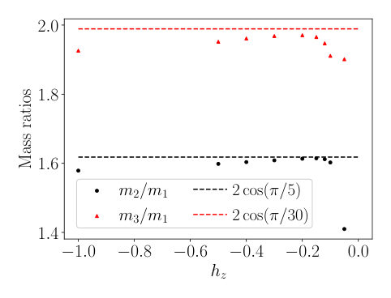
<figcaption class="paper-figure-caption"><b>Fig 2.</b> FIG. 1. Mass ratios of the three stable particles calculated on the L = 20 lattice with ξlat = 0.01 as functions of hz. The dashed lines are predictions from the E8 theory. The lattice results are expected to be close to the E8 predictions but not exactly equal.</figcaption>
</figure>
<figure class="paper-figure-card">
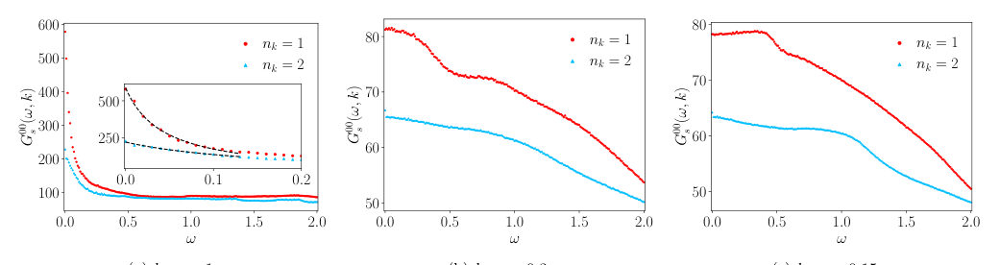
<figcaption class="paper-figure-caption"><b>Fig 3.</b> FIG. 3. Real-time symmetric correlation functions of energy densities in frequency space with two different crystal momenta k = 2πnk/L on a periodic L = 20 Ising lattice with ξlat = 0.01 at T = 10 for three different longitudinal fields. (a) Outside the scaling region, the symmetric correlator shows a diffusive peak. The black dashed lines in the inset are fits of the form b |ω|+4Dε sin2(k/2) in the range ω ∈[0, 0.13]. The fitted parameter values are listed in Table I. (b, c) Inside the scaling region, the diffusive peak disappears.</figcaption>
</figure>
<figure class="paper-figure-card">
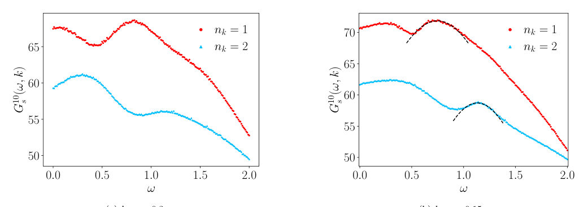
<figcaption class="paper-figure-caption"><b>Fig 4.</b> FIG. 4. Real-time symmetric correlation functions of momentum densities in frequency space with two different crystal momenta k = 2πnk/L on a periodic L = 20 Ising lattice with ξlat = 0.01 at T = 10 for two different longitudinal fields inside the scaling region. Deep in the scaling region hz = −0.15, two peaks emerge that can be well described by a Lorentzian shape b0 (ω−b1)2+b2 , as indicated by the black dashed lines in (b). The fitting is performed in the interval ω ∈[0.54, 0.95] for nk = 1 and ω ∈[1, 1.27] for nk = 2. The fitted parameter values are listed in Table II. These emergent peaks hint the possibility of finding the sound modes if one can take hz even closer to 0 while still...</figcaption>
</figure>
<figure class="paper-figure-card">
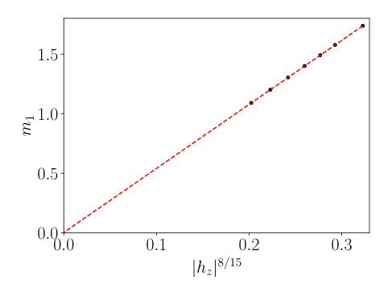
<figcaption class="paper-figure-caption"><b>Fig 5.</b> FIG. 5. Mass gap on an L = 32 lattice with ξlat = 0.01 as a function of the coupling (black points). The red dashed line is a linear fit. The fitted slope is 5.375 and the fitted intercept is 2.790 × 10−3, up to four significant numbers. This linear line establishes the beta function of the theory.</figcaption>
</figure>
</div>

<p><strong>Summary.</strong> The paper simulates a 1+1D Ising field theory using real-time lattice Hamiltonian methods to study how the system reaches hydrodynamic equilibrium. By analyzing the stress-energy tensor correlation function, the authors confirm that Umklapp scattering is suppressed, allowing sound waves to propagate. This allowed them to nonperturbatively calculate fundamental transport properties like the ratio of bulk viscosity to entropy density and the speed of sound.</p>
<p><strong>Why it may be interesting.</strong> This work is highly relevant as it uses advanced quantum many-body simulation techniques (MPS) to tackle non-equilibrium dynamics—a key area of modern condensed matter theory that bridges microscopic quantum rules to macroscopic fluid behavior, similar to studies in AMO systems undergoing rapid quench or thermalization.</p>
<details>
<summary>Detailed structure</summary>
<p><strong>Main problem.</strong> The study aims to understand non-equilibrium dynamics, specifically hydrodynamization, and calculate transport coefficients like bulk viscosity ($\zeta$) and the speed of sound ($c_s$) in a system exhibiting Umklapp processes.</p>
<p><strong>Main result.</strong> The simulations successfully demonstrated that Umklapp processes are suppressed in the scaling region, allowing for the emergence of relativistic hydrodynamic sound modes. Quantitative results were obtained: $\zeta/s = 14.19 \pm 0.90$ and $c_s/c = 0.76 \pm 0.02$.</p>
<p><strong>Method.</strong> The research employs real-time lattice Hamiltonian simulation techniques, utilizing both classical exact diagonalization and advanced Matrix Product State (MPS) tensor network methods to calculate the symmetric correlation function of the stress-energy tensor.</p>
<p><strong>Model / system.</strong> The model is a 1+1 dimensional Ising field theory, derived from deforming the 1+1D Ising conformal field theory. The system evolves according to a lattice Hamiltonian, and observables are extracted from the time evolution of the stress-energy tensor correlation function.</p>
<p><strong>Key observables.</strong> Symmetric correlation function of the stress-energy tensor ($G_{\mu
u}^s$), bulk viscosity ($\zeta/s$), speed of sound ($c_s/c$), and momentum conservation checks.</p>
<p><strong>Important parameters / regimes.</strong> The analysis focuses on the 'scaling region' defined by specific limits on lattice couplings, requiring extrapolation to the continuum limit. Key parameters include temperature $T \approx 7.14$ (in units of particle mass).</p>
<p><strong>Assumptions / limitations.</strong> It is assumed that hydrodynamics accurately describes the late-time and long-wavelength behavior, and that Umklapp processes must be suppressed for sound modes to emerge.</p>
<p><strong>Figures summary.</strong> Figures illustrate the transition from diffusive dynamics (outside scaling region) to propagating sound modes (inside scaling region) in momentum space correlators. Plots also show linear fits of derived parameters ($c_s/c$ and $\zeta/s$) versus lattice coupling strength for continuum extrapolation.</p>
<p><strong>Paper structure.</strong> The paper establishes the necessity of real-time simulation over Euclidean methods, details the Ising model setup and stress-energy tensor derivation, analyzes the transition from diffusive to propagating modes using MPS simulations, and finally extrapolates results to extract quantitative transport coefficients in the continuum limit.</p>
</details>
<details>
<summary>Abstract</summary>
<p>We calculate the real-time symmetric correlation function of the stress-energy tensor for a non-integrable Ising field theory consisting of three stable scalar particles via lattice Hamiltonian simulation. Using classical exact diagonalization and the matrix product state tensor network methods, we find that in the scaling region of the lattice theory, Umklapp processes are suppressed and the sound modes of relativistic hydrodynamics emerge at long wavelength and late time. The extracted ratio of bulk viscosity to entropy density is $ζ/s=14.19\pm 0.90$ and the speed of sound is $c_s/c=0.76 \pm 0.02$ at the temperature $T\approx 7.14$ in units of the lowest stable particle's mass. Our study demonstrates the utility of real-time lattice Hamiltonian simulation for describing hydrodynamization and calculating transport coefficients nonperturbatively.</p>
</details>
<p><sub><a href="#top">↑ back to top</a></sub></p>

<p><a id="paper-2606.10474"></a></p>
<h3 id="finite-time-orientational-relaxation-restructures-collective-motion-in-polar-active-matter"><a href="http://arxiv.org/abs/2606.10474v1">Finite-Time Orientational Relaxation Restructures Collective Motion in Polar Active Matter</a></h3>
<p><strong>Authors:</strong> Rajneesh Kumar, Subhransu Sekhar Mishra, Debasish Chaudhuri<br>
<strong>Type:</strong> theory · <strong>Category:</strong> statistical mechanics · <strong>PDF:</strong> <a href="https://arxiv.org/pdf/2606.10474v1">https://arxiv.org/pdf/2606.10474v1</a><br>
<strong>Analysis basis:</strong> full PDF text, analyzed in chunks
<strong>Topic relevance:</strong> 🔥 <code>non-equilibrium universality</code> <strong>4/5</strong> · <code>driven-dissipative phase transition</code> <strong>3/5</strong> · <code>methods for driven-dissipative</code> <strong>3/5</strong> · <code>non-equilibrium dynamics</code> <strong>3/5</strong> · <code>analog quantum simulation</code> <strong>2/5</strong> · <code>correlated / nonlocal dissipation</code> <strong>2/5</strong> · <code>Frenkel-Kontorova</code> <strong>1/5</strong> · <code>Keldysh / 2PI / non-Gaussian methods</code> <strong>1/5</strong> · <code>entanglement &amp; information structure</code> <strong>1/5</strong></p>
<div class="figure-strip-hint">↔ Scroll figures horizontally</div>
<div class="paper-figures-scroll">
<figure class="paper-figure-card">
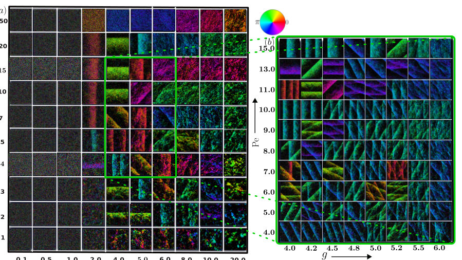
<figcaption class="paper-figure-caption"><b>Fig 1.</b> Figure 1. (a) Configurational phase diagram in the (Pe, g) plane for a system of N = 16,000 particles at fixed number density ρ = 1.0. Particle colors represent the heading direction ui = (cos θi, sin θi), with θi ∈[0, 2π]. Variation of Pe and g gives rise to pattern formation associated with an order-disorder transition, including homogeneous isotropic states, polar bands, polar micro-clusters, and homogeneous polar phases. (b) Configurational phase diagram in the (Pe, g) plane for a system with N = 64,000 particles, corresponding to the parameter region highlighted by the green box in (a). The enlarged system size reveals an additional cross-sea phase that is absent in smaller systems.</figcaption>
</figure>
<figure class="paper-figure-card">
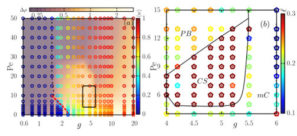
<figcaption class="paper-figure-caption"><b>Fig 2.</b> Figure 2. Phase diagram in the (Pe, g) plane, where the dimensionless activity is defined as Pe = v0/(rcDr) and the effective alignment rate as g = J/Dr. (a) Points are colored by the polar order parameter ⟨w⟩, while the background heat map represents density fluctuations ∆ρ. The black dashed line marks the order-disorder phase boundary, determined from the maxima of fluctuations in the polar order param- eter. The red dashed line represents Pe∗= (B/g∗)(g0 ∗−g∗) 1 2 , with B = 11 and g0 ∗= 2.5, corresponding to Eq. (14). (b) En- larged view of the region identified by the black rectangle in (a), showing the cross-sea phase, polar banded phase, and microcluster phase. Points are colored...</figcaption>
</figure>
<figure class="paper-figure-card">
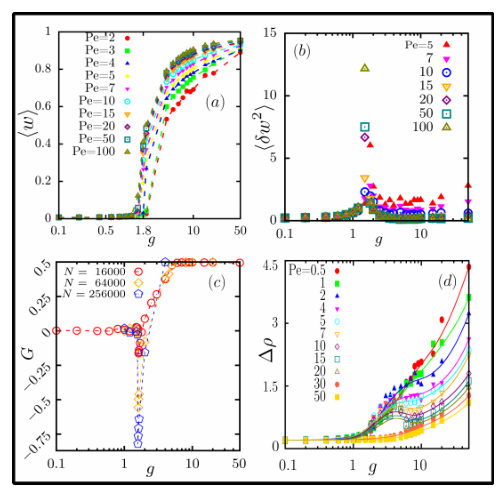
<figcaption class="paper-figure-caption"><b>Fig 3.</b> Figure 3. Steady-state properties as a function of the di- mensionless alignment rate g for different activities Pe. Re- sults are shown for N = 16,000 particles at number density ρ = 1.0. (a) Polar order parameter ⟨w⟩versus g. (b) Vari- ance of the polar order, ⟨δw2⟩, versus g, showing peaks near the order-disorder transitions. (c) Binder cumulant G versus g for Pe = 10. A negative dip near g∗signals a first-order transition; colors indicate different system sizes. (d) Root- mean-square density fluctuations ∆ρ versus g.</figcaption>
</figure>
<figure class="paper-figure-card">
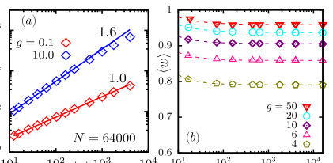
<figcaption class="paper-figure-caption"><b>Fig 4.</b> Figure 4. (a) Scaling of number fluctuations, ⟨∆n2⟩∼⟨n⟩α, for Pe = 10 in the disordered phase (g = 0.1) and homoge- neous polar phase (g = 10). The lines show α = 1 for g = 0.1 and α = 1.6 for g = 10, demonstrating giant number fluctu- ations in the ordered phase. Results are for N = 6.4 × 104</figcaption>
</figure>
<figure class="paper-figure-card">

<figcaption class="paper-figure-caption"><b>Fig 5.</b> Figure 5. For a system of size N = 16,000 at Pe = 10, the local probability distributions (a) P(n∥) and (b) P(ρ) are shown for various values of the dimensionless alignment rate g. In both cases, the distributions exhibit clear bimodality near transition, indicating phase coexistence.</figcaption>
</figure>
</div>

<p><strong>Summary.</strong> This work analyzes polar active matter using a model where particle orientation relaxes at a finite rate. Through extensive simulations, the authors map out a complex phase diagram showing transitions between distinct structural states like banded and cross-sea phases. The key finding is that this finite relaxation time acts as a crucial control parameter, fundamentally restructuring the system's collective behavior.</p>
<p><strong>Why it may be interesting.</strong> While focused on classical active matter, the study of non-equilibrium phase transitions, first-order transitions diagnosed by cumulants, and the role of dissipation/relaxation rates ($D_r$ vs $J$) provides analogous concepts to understanding critical dynamics in open quantum systems or driven many-body models.</p>
<details>
<summary>Detailed structure</summary>
<p><strong>Main problem.</strong> The study investigates how finite-time orientational relaxation restructures the collective motion and phase transitions in polar active matter systems.</p>
<p><strong>Main result.</strong> The system exhibits a rich sequence of structural phases (Isotropic $  o$ Polar Banded $   o$ Cross-Sea $  o$ Micro-clustered) driven by increasing alignment rate, with transitions being strongly first order.</p>
<p><strong>Method.</strong> Large-scale numerical simulations and mean-field analysis are used to map the non-equilibrium phase diagram in terms of activity and alignment rates.</p>
<p><strong>Model / system.</strong> The model consists of Vicsek-like active particles whose orientations evolve via a Langevin formulation that incorporates finite-rate relaxation towards the local mean direction, combining consensus dynamics with XY-like rotational diffusion.</p>
<p><strong>Key observables.</strong> Polar order parameter ($\langle w 
angle$), density fluctuations ($\Delta
ho$), structural order parameter ($\langle \ell 
angle$), and Binder cumulants for transition characterization.</p>
<p><strong>Important parameters / regimes.</strong> Activity (Péclet number, $  ext{Pe}$) and effective alignment rate ($g = J/D_r$).</p>
<p><strong>Assumptions / limitations.</strong> The analysis relies on a specific Langevin formulation incorporating finite relaxation time, and some theoretical work uses mean-field approximations.</p>
<p><strong>Figures summary.</strong> Figures illustrate the phase diagram in $(	ext{Pe}, g)$ space showing HI, PB, CS, HP, and mC regimes; local probability distributions transition from unimodal to bimodal near first-order transitions.</p>
<p><strong>Paper structure.</strong> The paper develops the Langevin dynamics, analyzes the resulting non-equilibrium phase diagram across varying activity parameters, characterizes multiple structural phases using order parameters, and concludes that finite relaxation acts as a key control parameter restructuring collective behavior.</p>
</details>
<details>
<summary>Abstract</summary>
<p>We introduce a Langevin formulation of Vicsek-like active particles in which orientations evolve through finite-rate relaxation toward the local mean direction, with alignment strength $J$ and rotational diffusivity $D_r$, thereby combining Vicsek-type local consensus with XY-like orientational dynamics. Using large-scale numerical simulations, we determine the nonequilibrium phase diagram as a function of activity and alignment rate. Increasing the alignment rate drives a sequence of transitions from a homogeneous isotropic state to polar bands, a cross-sea phase of intersecting bands, a homogeneous polar state, and ultimately a micro-clustered regime. The isotropic-to-polar transition is strongly first order, as evidenced by Binder cumulants and bimodal distributions of local polarization and density, indicating coexistence of gas-like and liquid-like regions. Near the onset of collective motion, band size increases with activity but depends non-monotonically on alignment rate. Further increasing the alignment rate drives the system through the cross-sea and homogeneous polar phases before enhanced density fluctuations lead to micro-clustering. Our results demonstrate that finite-time orientational relaxation acts as a control parameter that qualitatively restructures collective behavior in polar active matter.</p>
</details>
<p><sub><a href="#top">↑ back to top</a></sub></p>

<p><a id="paper-2606.10349"></a></p>
<h3 id="magnetic-hip-nn-for-spin-dynamics-in-disordered-itinerant-magnets"><a href="http://arxiv.org/abs/2606.10349v1">Magnetic HIP-NN for spin dynamics in disordered itinerant magnets</a></h3>
<p><strong>Authors:</strong> Supriyo Ghosh, Yunhao Fan, Sheng Zhang, Kipton Barros, Gia-Wei Chern<br>
<strong>Type:</strong> theory · <strong>Category:</strong> disordered systems and neural networks · <strong>PDF:</strong> <a href="https://arxiv.org/pdf/2606.10349v1">https://arxiv.org/pdf/2606.10349v1</a><br>
<strong>Analysis basis:</strong> full PDF text, analyzed in chunks
<strong>Topic relevance:</strong> 🔥 <code>methods for driven-dissipative</code> <strong>4/5</strong> · <code>exotic spin models in light-matter</code> <strong>3/5</strong> · <code>spintronics-quantum-optics interface</code> <strong>3/5</strong> · <code>Keldysh / 2PI / non-Gaussian methods</code> <strong>2/5</strong> · <code>driven-dissipative phase transition</code> <strong>2/5</strong> · <code>non-equilibrium dynamics</code> <strong>2/5</strong> · <code>Kondo &amp; dissipative impurity</code> <strong>1/5</strong> · <code>analog quantum simulation</code> <strong>1/5</strong> · <code>correlated / nonlocal dissipation</code> <strong>1/5</strong> · <code>non-equilibrium universality</code> <strong>1/5</strong></p>
<div class="figure-strip-hint">↔ Scroll figures horizontally</div>
<div class="paper-figures-scroll">
<figure class="paper-figure-card">

<figcaption class="paper-figure-caption"><b>Fig 1.</b> FIG. 1. Schematic illustration of the magnetic HIP-NN framework for electron-mediated spin dynamics in disordered itinerant magnets. (a) Localized Heisenberg spins {Si} embedded in an amorphous lattice are mapped onto rotationally invariant bond features bij = Si · Sj, which are combined with geometric information associated with inter-site distances rij. These quantities define the local environments used to construct hierarchical feature representations {zi} on each magnetic site. (b) Within the interaction layer, neighboring feature vectors z(ℓ) j are weighted by learned distance-dependent functions v(rij) together with the spin-correlation features bij, and are subsequently processed...</figcaption>
</figure>
<figure class="paper-figure-card">

<figcaption class="paper-figure-caption"><b>Fig 2.</b> FIG. 2. Spatial dependence of the Hessian matrix elements Hij = ∂2E/∂Sx i ∂Sx j evaluated from the ML-generated energy functional at different times during the ED-LLG simulations: (a) t = 0, (b) t = 100, (c) t = 500, and (d) t = 2000. The Hes- sian elements are plotted as a function of the intersite distance rij. The shaded region denotes the forbidden short-distance regime rij &lt; rmin in the underlying spin-glass model. The rapid decay of Hij demonstrates the locality and stability of the learned magnetic interactions throughout the dynamical evolution.</figcaption>
</figure>
<figure class="paper-figure-card">

<figcaption class="paper-figure-caption"><b>Fig 3.</b> FIG. 3. (a) Parity plot of the mHIP-NN predicted torque components, TML i = Si × HML i , versus the exact ED results for the training (blue) and test (red) datasets. Each point corresponds to one Cartesian component of the local torque vector. (b) Distribution of the prediction error δ = T ML−T ED</figcaption>
</figure>
<figure class="paper-figure-card">

<figcaption class="paper-figure-caption"><b>Fig 4.</b> FIG. 4. Spin-spin correlation function C(r) at different times following a thermal quench, obtained from ED-LLG and ML- LLG simulations: (a) t = 0, (b) t = 100, (c) t = 500, and (d) t = 2000. The close agreement between the ED and ML results demonstrates that the learned force-field model accu- rately reproduces the nonequilibrium spin dynamics and the evolution of spatial magnetic correlations.</figcaption>
</figure>
<figure class="paper-figure-card">

<figcaption class="paper-figure-caption"><b>Fig 5.</b> Figure 3 demonstrates the strong predictive perfor- mance of the mHIP-NN model for the local torque Ti = Si × Hi throughout the spin dynamics. As shown in the parity plot of Fig. 3(a), the predicted torque components closely follow the exact ED results for both the training and test datasets, with only small deviations from the diagonal line. The corresponding error distributions in Fig. 3(b) are sharply peaked around zero and exhibit very small variance, indicating both high accuracy and excel- lent generalization capability of the model. From the test dataset, we estimate a coefficient of determination of approximately R2 ∼0.98 and a mean-squared error of order MSE ∼10−5. The close...</figcaption>
</figure>
</div>

<p><strong>Summary.</strong> This work introduces mHIP-NN, a magnetic neural network extension designed to simulate spin dynamics in disordered itinerant magnets. It overcomes computational barriers by learning the effective magnetic energy landscape and local torques directly from microscopic electronic calculations. The method successfully reproduces non-equilibrium spin correlation evolution, establishing a scalable ML framework for coupled atom-spin systems.</p>
<p><strong>Why it may be interesting.</strong> The framework provides a powerful ML tool for simulating complex many-body quantum dynamics (spin/electron coupling) that are typically intractable due to the need for repeated solving of electronic structure equations.</p>
<details>
<summary>Detailed structure</summary>
<p><strong>Main problem.</strong> Developing an efficient, scalable framework to simulate electron-mediated spin dynamics in disordered itinerant magnets, circumventing the computational bottleneck of repeated exact electronic structure calculations.</p>
<p><strong>Main result.</strong> The magnetic HIP-NN (mHIP-NN) accurately reproduces local torques and captures non-equilibrium spin correlation evolution by learning effective interactions directly from microscopic data.</p>
<p><strong>Method.</strong> The authors employ a specialized Graph Neural Network architecture that incorporates rotationally invariant spin correlations into message-passing layers to construct a differentiable energy functional for coupled atom-spin dynamics.</p>
<p><strong>Model / system.</strong> The system is disordered itinerant magnets governed by an s-d exchange Hamiltonian. The dynamics are simulated using the Landau-Lifshitz-Gilbert (LLG) equation, where effective magnetic fields arise from electronic structure calculations.</p>
<p><strong>Key observables.</strong> Local torques ($\mathbf{T}_i$), non-equilibrium spatial spin correlations ($C(\mathbf{r}, t)$), and the characteristic correlation length $\xi(t)$.</p>
<p><strong>Important parameters / regimes.</strong> The model handles structural disorder, itinerant electron hopping amplitudes (e.g., $e^{-|\mathbf{r}_i-\mathbf{r}_j|/l}$), and spin-spin coupling strengths.</p>
<p><strong>Assumptions / limitations.</strong> The primary assumption is that the complex effective magnetic interactions can be accurately approximated by a differentiable ML potential trained on data generated from exact diagonalization simulations.</p>
<p><strong>Figures summary.</strong> Figures illustrate the spatial decay of interaction terms (Hessian matrix elements) confirming locality, and show the time evolution of spin-spin correlation functions $C(\mathbf{r}, t)$ comparing ED-LLG to ML-LLG results.</p>
<p><strong>Paper structure.</strong> The paper introduces mHIP-NN for coupled atom-spin dynamics, details its graph structure using invariant descriptors ($r_{ij}, b_{ij}$), benchmarks it against LLG dynamics by predicting local torques, and finally demonstrates its ability to track non-equilibrium spin correlation growth ($\xi(t)$).</p>
</details>
<details>
<summary>Abstract</summary>
<p>We present a magnetic extension of the Hierarchically Interacting Particle Neural Network (HIP-NN) that enables large-scale simulations of electron-mediated spin dynamics in disordered itinerant magnets. The resulting magnetic HIP-NN (mHIP-NN) incorporates rotationally invariant spin correlations directly into hierarchical message-passing layers, enabling the network to learn emergent magnetic energy landscapes and effective local fields from coupled geometric-spin environments while preserving spin-rotation symmetry. As a benchmark application, we consider structurally disordered itinerant $s$-$d$ exchange models in which the effective magnetic forces arise dynamically from the instantaneous electronic structure and are computationally prohibitive to evaluate using conventional exact-diagonalization-based approaches. We show that mHIP-NN accurately reproduces the local torques governing Landau-Lifshitz-Gilbert dynamics and faithfully captures the nonequilibrium evolution of spatial spin correlations following thermal quenches. Our results establish symmetry-aware hierarchical message-passing networks as an efficient and scalable framework for large-scale simulations of frustrated itinerant spin systems and nonequilibrium magnetic dynamics. More broadly, because the learned energy functional remains fully differentiable with respect to both atomic coordinates and spin variables, the framework also provides a natural foundation for spin-dependent interatomic potentials and coupled atom-spin dynamics.</p>
</details>
<p><sub><a href="#top">↑ back to top</a></sub></p>

<p><a id="paper-2606.10548"></a></p>
<h3 id="interaction-driven-dynamics-in-graphene-flakes-as-a-benchmark-for-quantum-simulation"><a href="http://arxiv.org/abs/2606.10548v1">Interaction-driven dynamics in graphene flakes as a benchmark for quantum simulation</a></h3>
<p><strong>Authors:</strong> Fabian Eickhoff, Satoshi Ejima, Lukas Windgätter, Florian G. Eich, Hannah Rittich, Sebastian Zanker, Peter Schmitteckert<br>
<strong>Type:</strong> theory · <strong>Category:</strong> strongly correlated electrons · <strong>PDF:</strong> <a href="https://arxiv.org/pdf/2606.10548v1">https://arxiv.org/pdf/2606.10548v1</a><br>
<strong>Analysis basis:</strong> full PDF text, analyzed in chunks
<strong>Topic relevance:</strong> 🔥 <code>non-equilibrium dynamics</code> <strong>4/5</strong> · <code>methods for driven-dissipative</code> <strong>3/5</strong> · <code>non-equilibrium universality</code> <strong>3/5</strong> · <code>analog quantum simulation</code> <strong>2/5</strong> · <code>driven-dissipative phase transition</code> <strong>2/5</strong> · <code>Frenkel-Kontorova</code> <strong>1/5</strong> · <code>Keldysh / 2PI / non-Gaussian methods</code> <strong>1/5</strong> · <code>correlated / nonlocal dissipation</code> <strong>1/5</strong> · <code>entanglement &amp; information structure</code> <strong>1/5</strong></p>
<div class="figure-strip-hint">↔ Scroll figures horizontally</div>
<div class="paper-figures-scroll">
<figure class="paper-figure-card">

<figcaption class="paper-figure-caption"><b>Fig 1.</b> Figure 1: Schematic representation of the 4 × 4 graphene flake used in this work, comprising 32 lattice sites on the honeycomb lattice. The units are in lattice con- stants.</figcaption>
</figure>
<figure class="paper-figure-card">

<figcaption class="paper-figure-caption"><b>Fig 2.</b> Figure 2: Time evolution after a particle–hole quench in a 4 × 4 graphene flake (32 sites). The upper panels show the orbital entropy Ssp, while the lower panels display the occupation of the initially excited single-particle level n˜p. The left panels corre- spond to periodic boundary conditions and the right panels to hard-wall boundary conditions. Colored curves denote simulations restricted to at most n = 1 (grey), n = 2 (blue), and n = 3 (olive) particle–hole excitations, while black curves repre- sent the full Fock-space dynamics. Periodic systems are already well described by low-order excitation spaces (n ≤2), whereas hard-wall systems require higher-order excitations and exhibit...</figcaption>
</figure>
<figure class="paper-figure-card">

<figcaption class="paper-figure-caption"><b>Fig 3.</b> Figure 3: Full Fock-space evolution of all single-particle occupations nq following the quench in a 4 × 4 graphene flake. Single-particle indices on the vertical axis are ordered by the non-interacting eigenenergies εℓ. White (black) indicates occupation one (zero). Panel (a) shows periodic boundary conditions and panel (b) hard-wall boundary conditions. Periodic systems show rapid and efficient redistribution of the excitation, while hard-wall systems display slower and more structured dynamics indicative of higher-order processes.</figcaption>
</figure>
<figure class="paper-figure-card">

<figcaption class="paper-figure-caption"><b>Fig 4.</b> Figure 4: System-size dependence of excitation-space convergence. Time evolution of the orbital entropy for periodic (a–c) and hard-wall (d–f) boundary conditions for systems of increasing size: 4×2 (a,d), 4×3 (b,e), and 4×4 (c,f). Grey, blue, and olive curves correspond to simulations restricted to n = 1, n = 2, and n = 3 particle–hole excitations, respectively. Low-order excitation spaces remain accurate for periodic graphene across system sizes, whereas hard-wall systems show increasing deviations and growing importance of higher-order correlations.</figcaption>
</figure>
<figure class="paper-figure-card">

<figcaption class="paper-figure-caption"><b>Fig 5.</b> Figure 5: Interaction dependence of excitation-space convergence for a 4 × 4 graphene flake. Time evolution of the orbital entropy is shown for periodic (a–d) and hard-wall (e–h) boundary conditions at increasing nearest-neighbor interaction strength U1 = 0.2, 0.4, 0.6, and 0.8 (from left to right), with U2 = U3 = 0. Grey, blue, and olive curves correspond to simulations restricted to n = 1, n = 2, and n = 3 particle–hole excitation sectors, respectively. Increasing interaction strength enhances higher-order contributions in all cases, but periodic systems retain near- convergence at low excitation order over a much wider parameter range than hard- wall systems.</figcaption>
</figure>
</div>

<p><strong>Summary.</strong> The paper analyzes ultrafast carrier relaxation in interacting graphene flakes after an optical quench by comparing full time evolution against simplified models restricted to low-order excitations. It establishes that while periodic boundaries allow for good descriptions using few terms, hard-wall confinement necessitates including high-order correlations, providing a crucial benchmark for quantum simulation methods.</p>
<p><strong>Why it may be interesting.</strong> This work provides a rigorous, quantitative testbed for many theoretical approaches used in non-equilibrium quantum dynamics, particularly highlighting how boundary conditions can fundamentally alter the required complexity of the underlying physics description.</p>
<details>
<summary>Detailed structure</summary>
<p><strong>Main problem.</strong> The study investigates whether interaction-driven ultrafast dynamics (carrier relaxation) following an optical quench in graphene can be accurately described using only low-order particle–hole excitation subspaces.</p>
<p><strong>Main result.</strong> Convergence depends critically on geometry: periodic flakes are well-described by low-order excitations, whereas hard-wall confined geometries require substantial higher-order correlation contributions.</p>
<p><strong>Method.</strong> The authors compare exact real-time evolution (full Fock space) against truncated simulations restricted to subspaces containing up to $n$ particle–hole excitations.</p>
<p><strong>Model / system.</strong> The system is finite graphene flakes modeled by an interacting tight-binding Hamiltonian for spinless fermions. The dynamics are initiated via a single particle–hole excitation quench protocol.</p>
<p><strong>Key observables.</strong> Single-particle orbital entropy ($S_{sp}$), which diagnoses dynamic correlation growth, and the occupation of the initially excited level ($    ilde{n}_p$).</p>
<p><strong>Important parameters / regimes.</strong> Boundary conditions (Periodic vs. Hard-wall), interaction strengths ($U_1, U_2, U_3$), and excitation order truncation limit ($n=1, 2, 3$).</p>
<p><strong>Assumptions / limitations.</strong> The study tests the limits of low-order descriptions against full many-particle exact real-time dynamics; convergence is used as a diagnostic criterion for method applicability.</p>
<p><strong>Figures summary.</strong> Figures compare time evolution of orbital entropy and excited level occupation across different excitation orders ($n=1, 2, 3$) for both periodic and hard-wall boundary conditions, highlighting the divergence in confined systems.</p>
<p><strong>Paper structure.</strong> The paper establishes a benchmark problem by simulating quench dynamics. It systematically compares full Fock-space evolution against increasingly truncated subspaces (low-order excitations), using entropy convergence as the primary diagnostic tool to map out the regime where simple approximations fail due to geometry or confinement.</p>
</details>
<details>
<summary>Abstract</summary>
<p>We study interaction-driven ultrafast dynamics in finite graphene flakes following an optical pump quench in an interacting tight-binding model. By comparing exact real-time evolution with simulations restricted to particle-hole excitation subspaces, we assess when relaxation can be captured by low-order many-body processes and when this is not sufficient. The single-particle orbital entropy provides a compact diagnostic for dynamic correlation growth. For the systems studied here, periodic graphene flakes are well described by low-order excitations, whereas confined geometries require substantial higher-order contributions even for relatively small interaction strengths. The quench protocol combines simple initial-state preparation with strongly correlated dynamics, identifying a promising benchmark problem for future quantum-computing simulations.</p>
</details>
<p><sub><a href="#top">↑ back to top</a></sub></p>

<p><a id="paper-2606.10773"></a></p>
<h3 id="nonequilibrium-green-functions-simulations-for-large-correlated-systems"><a href="http://arxiv.org/abs/2606.10773v1">Nonequilibrium Green Functions Simulations for Large Correlated Systems</a></h3>
<p><strong>Authors:</strong> Erik Schroedter, Michael Bonitz, Jan-Philip Joost<br>
<strong>Type:</strong> theory · <strong>Category:</strong> strongly correlated electrons · <strong>PDF:</strong> <a href="https://arxiv.org/pdf/2606.10773v1">https://arxiv.org/pdf/2606.10773v1</a><br>
<strong>Analysis basis:</strong> full PDF text, analyzed in chunks
<strong>Topic relevance:</strong> 🔥 <code>Keldysh / 2PI / non-Gaussian methods</code> <strong>4/5</strong> · <code>methods for driven-dissipative</code> <strong>3/5</strong> · <code>non-equilibrium dynamics</code> <strong>3/5</strong> · <code>driven-dissipative phase transition</code> <strong>2/5</strong> · <code>non-equilibrium universality</code> <strong>2/5</strong> · <code>Kondo &amp; dissipative impurity</code> <strong>1/5</strong> · <code>analog quantum simulation</code> <strong>1/5</strong></p>
<div class="figure-strip-hint">↔ Scroll figures horizontally</div>
<div class="paper-figures-scroll">
<figure class="paper-figure-card">

<figcaption class="paper-figure-caption"><b>Fig 1.</b> Figure 1. Levels of self-consistency for the different approaches. Here, “fully self-consistent” refers to the self-consistent solu- tion of the KBEs, for any of the discussed self-energy ap- proximations. Ξ denotes the contribution arising from the collision term inside the integral term of the BSE (18) and is of the form Ξ ∼ R IGwχ. Application of the GKBA is equivalent to neglecting Ξ. Within the δNEGF approach, the R term is neglected what constitutes an intermediate level of self-consistency. Finally, “mean-field propagators” refers to inserting single-particle NEGFs at the mean-field level into the BSE (“one-shot” scheme).</figcaption>
</figure>
<figure class="paper-figure-card">

<figcaption class="paper-figure-caption"><b>Fig 2.</b> Figure 3. Further analysis of the setup of Fig. 2 for a broad range of coupling strengths, U/J = 0 . . . 20. Asymptotic values of (a) imbalance (97) and (c) correlated double occupation (81), averaged between t1J/ℏ= 20 and t2J/ℏ= 50. (b): first time the imbalance crosses zero.</figcaption>
</figure>
<figure class="paper-figure-card">

<figcaption class="paper-figure-caption"><b>Fig 3.</b> Figure 2. Benchmarking of δTPP for the melting of an 11-site CDW chain at [(b)–(c)] U/J = 5 and [(d)–(e)] U/J = 15. Comparison of [(b) and (d)] the density imbalance, Eq. (97) and [(c) and (e)] the correlated double occupation, Eq. (81).</figcaption>
</figure>
<figure class="paper-figure-card">

<figcaption class="paper-figure-caption"><b>Fig 4.</b> Figure 4. Diffusion of a doubly-occupied circular initial distribution containing 74 particles on a 19×19 square lattice for U/J = 3. (a)–(d): Surface plots of the local density distribution at different times for exact simulations which require Ns = 106 345 samples. (e)–(h): Surface plots of the local density distribution at the final time tJ/ℏ= 10, for different numbers of samples Ns. Already for 3200 samples [panel (g)] the results are indistinguishable from the exact result shown in panel (h).</figcaption>
</figure>
<figure class="paper-figure-card">

<figcaption class="paper-figure-caption"><b>Fig 5.</b> Figure 5. Further analysis of the setup of Fig. 4 for (a) the expansion velocity of the distribution, Eq. (98b), and (b) the correlation energy. Results for TDHF (red) and GKBA+TPP (orange) are added for comparison. Notice that averaged single- particle quantities, such as the expansion velocity, converge much faster than the local density in Fig. 4 and the correlation energy in panel (b). In general, even small sample numbers, cf. curve for Ns = 32, give accurate results.</figcaption>
</figure>
</div>

<p><strong>Summary.</strong> This paper introduces $\delta$NEGF, a novel quantum-fluctuation formulation for Nonequilibrium Green Functions. It solves the critical scaling bottleneck faced by previous methods when simulating correlated systems over long times or large unit cells. This breakthrough enables accurate study of complex dynamics in materials like Hubbard lattices and graphene nanoribbons.</p>
<p><strong>Why it may be interesting.</strong> It provides a scalable theoretical tool to study non-equilibrium dynamics in strongly correlated materials that were previously computationally inaccessible due to the exponential growth of required correlation functions.</p>
<details>
<summary>Detailed structure</summary>
<p><strong>Main problem.</strong> The primary challenge is accessing accurate, real-time dynamics for large, spatially inhomogeneous quantum systems where electron correlations are strong.</p>
<p><strong>Main result.</strong> The proposed $\delta$NEGF method successfully extends dynamical self-energy simulations to basis sizes of $N_b \sim 10^4$, overcoming the severe scaling bottlenecks of previous NEGF implementations.</p>
<p><strong>Method.</strong> It introduces a quantum-fluctuation formulation ($\delta$NEGF) that represents two-particle correlations via fluctuations of field operators, avoiding explicit storage of the full two-particle Green function.</p>
<p><strong>Model / system.</strong> The theory applies to general correlated fermionic systems, benchmarked on lattice models like the 2D Hubbard lattice and graphene nanoribbon heterostructures with long-range Coulomb interactions.</p>
<p><strong>Key observables.</strong> Dynamical self-energies (GW, T-matrix), charge migration dynamics, and ultrafast relaxation processes.</p>
<p><strong>Important parameters / regimes.</strong> Basis size ($N_b$) up to $10^4$, time steps ($N_t$), coupling strength (strong coupling regime).</p>
<p><strong>Assumptions / limitations.</strong> The method relies on a quantum-fluctuation formulation that guarantees stable dynamics by preserving the positivity of reduced density matrices, and uses stochastic low-rank decomposition for efficiency.</p>
<p><strong>Paper structure.</strong> The paper builds upon existing NEGF frameworks (like G1–G2) to address computational scaling limits. It introduces $\delta$NEGF by reformulating correlations through fluctuations ($\delta \hat{G}$), which allows for time-linear scaling and large basis sizes, culminating in benchmarks on physical systems.</p>
</details>
<details>
<summary>Abstract</summary>
<p>Correlated real-time dynamics in large, spatially inhomogeneous quantum systems remain difficult to access with nonequilibrium many-body methods. Two-time nonequilibrium Green functions (NEGF) retain dynamical correlations but their computational runtime grows cubically with the number of time steps $N_\mathrm{t}$. This scaling bottleneck could recently be overcome by introducing the G1--G2 scheme that is linear in $N_\mathrm{t}$, but requires propagation of a two-particle correlation function and may suffer from numerical instabilities. This has restricted simulations to small systems with $N_\mathrm{b} \sim 10^2$ basis states. Here we introduce a quantum-fluctuation formulation of nonequilibrium Green functions, denoted $δ$NEGF, that represents dynamical two-particle correlations through fluctuations of field-operator products, $δ\hat G$. This guarantees stable dynamics by preserving the positivity of the reduced density matrices, avoids the explicit storage of the two-particle Green function, and reduces the propagation to a finite ensemble of Hartree-Fock-like trajectories. Combined with a stochastic low-rank decomposition of the correlation functions, the method retains time-linear scaling while extending dynamical $GW$ and particle-particle and particle-hole $T$-matrix simulations to basis sizes of order $N_\mathrm{b}\sim 10^4$. We benchmark $δ$NEGF against exact and HF-GKBA results for lattice systems, finding stable correlated dynamics also at strong coupling. We further demonstrate large-scale simulations of diffusion in two-dimensional Hubbard lattices and ultrafast relaxation in graphene nanoribbon heterostructures with long-range Coulomb interactions. These results establish $δ$NEGF as a scalable route to dynamical self-energy simulations of large, spatially inhomogeneous correlated quantum systems beyond the reach of existing NEGF implementations.</p>
</details>
<p><sub><a href="#top">↑ back to top</a></sub></p>

<p><a id="paper-2606.11095"></a></p>
<h3 id="hybrid-hamiltonian-diagrammatic-quantum-impurity-solver"><a href="http://arxiv.org/abs/2606.11095v1">Hybrid Hamiltonian-diagrammatic quantum impurity solver</a></h3>
<p><strong>Authors:</strong> Yang Yu, Gaurav Harsha, Lei Zhang, Agnieszka Jażdżewska, Dominika Zgid, Xinyang Dong, Emanuel Gull<br>
<strong>Type:</strong> theory · <strong>Category:</strong> strongly correlated electrons · <strong>PDF:</strong> <a href="https://arxiv.org/pdf/2606.11095v1">https://arxiv.org/pdf/2606.11095v1</a><br>
<strong>Analysis basis:</strong> full PDF text, analyzed in chunks
<strong>Topic relevance:</strong> 🔥 <code>Kondo &amp; dissipative impurity</code> <strong>4/5</strong> · <code>Keldysh / 2PI / non-Gaussian methods</code> <strong>3/5</strong> · <code>methods for driven-dissipative</code> <strong>3/5</strong> · <code>analog quantum simulation</code> <strong>1/5</strong> · <code>correlated / nonlocal dissipation</code> <strong>1/5</strong> · <code>driven-dissipative phase transition</code> <strong>1/5</strong> · <code>non-equilibrium dynamics</code> <strong>1/5</strong></p>
<div class="figure-strip-hint">↔ Scroll figures horizontally</div>
<div class="paper-figures-scroll">
<figure class="paper-figure-card">

<figcaption class="paper-figure-caption"><b>Fig 1.</b> FIG. 1. Spinless, non-interacting impurity model coupled to a semi-circular bath at βt = 8. Top: Green’s function. Bot- tom: deviation from the exact result. nCT: number of coun- terterms, k: maximum expansion order. Bold-line calculated using triqs xca [32–34, 61].</figcaption>
</figure>
<figure class="paper-figure-card">

<figcaption class="paper-figure-caption"><b>Fig 2.</b> FIG. 2. Spinless, non-interacting impurity model coupled to a semi-circular bath at βt = 8. Top: Green’s function. Bot- tom: deviation from the exact result. nCT: number of coun- terterms. k: maximum expansion order. Bold-line calculated using triqs xca [32–34, 61].</figcaption>
</figure>
<figure class="paper-figure-card">

<figcaption class="paper-figure-caption"><b>Fig 3.</b> FIG. 3. Spinless, non-interacting impurity model coupled to a semi-circular bath at βt = 8, 32, 128. Left: size of residual hybridization function. Right: average expansion order. nCT denotes the number of counterterms.</figcaption>
</figure>
<figure class="paper-figure-card">

<figcaption class="paper-figure-caption"><b>Fig 4.</b> FIG. 4. Two-orbital impurity model with a Slater–Kanamori interaction coupled to a semi-circular bath at βt = 8. Plotted is the diagonal component of the Green’s function. nCT : number of counterterms, k : maximum expansion order. Bold data are reproduced from Fig. 6 of Ref. [34].</figcaption>
</figure>
<figure class="paper-figure-card">

<figcaption class="paper-figure-caption"><b>Fig 5.</b> FIG. 5. NiO SEET impurity result (first iteration) at β = 100Ha−1. Shown is the diagonal part of the imaginary-time Green’s function −Gl0l0,↑↑(τ) on a logarithmic axis for the first impurity orbital l0, using the active-space setting a of Ref. [67]. ED with nb fitted bath states and bare solver with nCT counterterms at expansion order k.</figcaption>
</figure>
</div>

<p><strong>Summary.</strong> This work presents a novel hybrid computational method to solve complex quantum impurity models central to strongly correlated electron physics. By augmenting diagrammatic techniques with a small set of counterterm bath sites, the authors achieve unprecedented precision and convergence speed compared to established methods. This establishes a practical route for high-accuracy theoretical predictions in materials like those exhibiting strong electronic correlations.</p>
<p><strong>Why it may be interesting.</strong> While focused on condensed matter, the technique of systematically improving convergence by adding auxiliary degrees of freedom to stabilize a perturbative expansion is highly relevant for open quantum system dynamics where bath coupling must be accurately modeled.</p>
<details>
<summary>Detailed structure</summary>
<p><strong>Main problem.</strong> The core challenge is solving quantum impurity models, which describe electron interactions coupled to a non-interacting bath, requiring advanced non-perturbative numerical methods.</p>
<p><strong>Main result.</strong> The proposed hybrid approach successfully combines diagrammatic expansions with auxiliary bath levels (counterterms) to achieve high precision in solving these models, surpassing existing benchmark calculations by orders of magnitude.</p>
<p><strong>Method.</strong> It augments standard diagrammatic impurity solvers by introducing a small set of counterterm bath sites. This reduces the residual problem to a regime where low-order perturbation theory converges rapidly and accurately.</p>
<p><strong>Model / system.</strong> The primary model is the quantum impurity model, tested first on a spinless Anderson impurity model coupled to a semi-circular bath, and later extended to an interacting two-orbital model relevant for Hund's metal physics.</p>
<p><strong>Key observables.</strong> Green's function $G(	au)$ and its deviation from the exact solution $|G(	au) - G_{	ext{Exact}}(	au)|$.</p>
<p><strong>Important parameters / regimes.</strong> The number of counterterms ($n_{CT}$) and the order of perturbation theory ($k$) are key tuning parameters used to control convergence.</p>
<p><strong>Assumptions / limitations.</strong> The method assumes that augmenting the bath with a small, carefully chosen set of auxiliary levels (counterterms) can systematically reduce the residual error sufficiently for low-order perturbation theory to become highly accurate and rapidly converging.</p>
<p><strong>Figures summary.</strong> Figures compare $G(	au)$ and its deviation from exact results across varying numbers of counterterms ($n_{CT}$) and expansion orders ($k$), demonstrating superior convergence compared to bare series expansions, especially in strongly correlated regimes.</p>
<p><strong>Paper structure.</strong> The paper introduces the problem (quantum impurity solvers), details the limitations of existing methods (Hamiltonian vs. Diagrammatic), proposes the hybrid methodology using counterterms, validates it on simple benchmarks (spinless model), and finally tests its efficacy on complex, interacting systems exhibiting sign problems.</p>
</details>
<details>
<summary>Abstract</summary>
<p>Quantum impurity models, which describe the coupling between interacting orbitals and a non-interacting bath, play a central role in the physics of strongly correlated electron systems. Solving a quantum impurity model in general requires the use of non-perturbative numerical methods. Hamiltonian-based approaches, which rely on an explicit bath discretization, are typically limited to a small number of bath sites or small entanglement, and diagrammatic methods suffer from sign problems, slow convergence, or diagram truncation approximations. Here we show that these two classes of methods can be combined: augmenting diagrammatic methods with a small auxiliary bath can reduce the residual problem to a regime where low-order perturbation theory is highly accurate and rapidly converging. In a simple benchmark, the precision of the hybrid approach surpasses bold-line calculations by several orders of magnitude; for a strongly interacting two-orbital model with a severe sign problem, convergence is achieved at three orders of magnitude lower computational cost than competing methods; and convergence to the unknown exact result is rapidly accelerated in a difficult realistic problem. Our results establish a practical route to high-precision quantum impurity solutions in correlated quantum systems.</p>
</details>
<p><sub><a href="#top">↑ back to top</a></sub></p>

<p><a id="paper-2606.09995"></a></p>
<h3 id="quantum-resources-in-non-stoquastic-quantum-annealing"><a href="http://arxiv.org/abs/2606.09995v1">Quantum resources in non-stoquastic quantum annealing</a></h3>
<p><strong>Authors:</strong> Chiara Capecci, Sebastian Nagies, Naga Dileep Varikuti, Philipp Hauke<br>
<strong>Type:</strong> theory · <strong>Category:</strong> statistical mechanics · <strong>PDF:</strong> <a href="https://arxiv.org/pdf/2606.09995v1">https://arxiv.org/pdf/2606.09995v1</a><br>
<strong>Analysis basis:</strong> full PDF text, analyzed in chunks
<strong>Topic relevance:</strong> 🔥 <code>entanglement &amp; information structure</code> <strong>4/5</strong> · <code>analog quantum simulation</code> <strong>2/5</strong> · <code>non-equilibrium dynamics</code> <strong>2/5</strong> · <code>non-equilibrium universality</code> <strong>2/5</strong> · <code>Keldysh / 2PI / non-Gaussian methods</code> <strong>1/5</strong> · <code>correlated / nonlocal dissipation</code> <strong>1/5</strong> · <code>driven-dissipative phase transition</code> <strong>1/5</strong> · <code>methods for driven-dissipative</code> <strong>1/5</strong></p>
<div class="figure-strip-hint">↔ Scroll figures horizontally</div>
<div class="paper-figures-scroll">
<figure class="paper-figure-card">

<figcaption class="paper-figure-caption"><b>Fig 1.</b> Figure 1. Illustration of two types of annealing schedules in the (λ, s) parameter space. The red line (λ(s) = 0) repre- sents a conventional stoquastic schedule, where only the nor- malized annealing time s varies. The blue curve depicts a non-stoquastic schedule, in which the strength λ of the non- stoquastic terms in the annealing Hamiltonian are tuned by the amplitude A. Schedules of this type are employed for the p-spin model in Sec. III, cf. Eq. (8), where they can permit to circumvent a line of first-order phase transitions [22].</figcaption>
</figure>
<figure class="paper-figure-card">

<figcaption class="paper-figure-caption"><b>Fig 2.</b> Figure 2. First row: (a) energy gap, (b) bipartite entanglement entropy, and (c) stabilizer Rényi entropy as functions of the annealing parameters s and λ, for a p-spin model cost Hamiltonian with N = 30 and p = 5. All observables are evaluated on the instantaneous ground state of the Hamiltonian in Eq. (7). All quantities are shown in logarithmic scale to enhance the visibility of relevant features across the annealing landscape. Both entanglement entropy and stabilizer Rényi entropy show a pronounced peak where the minimum gap occurs. Second row: finite-size scaling of (d) the minimum energy gap, (e) the maximum bipartite entanglement entropy, and (f) the maximum stabilizer Rényi entropy...</figcaption>
</figure>
<figure class="paper-figure-card">

<figcaption class="paper-figure-caption"><b>Fig 3.</b> Figure 3. Top row: bipartite entanglement entropy of the instantaneous ground state along the annealing sweep as a function of s, for annealing paths defined by λ(s) = 1 −A sin(πs) with amplitudes A = 0, 0.5, 0.7, 0.9 (from left to right). For each amplitude, results are shown for system sizes N = 20, 30, 40, 50. Bottom row: corresponding stabilizer Rényi entropy density. Insets show the zoomed-in regions around the maximal entanglement and SRE values. With increasing non-stoquastic amplitude A, the entanglement barrier becomes broader and grows with system size. The SRE density instead changes from a sharp peak, whose height decreases with N for A = 0, 0.5, to a broader and nearly...</figcaption>
</figure>
<figure class="paper-figure-card">

<figcaption class="paper-figure-caption"><b>Fig 4.</b> Figure 4. Graph structure of the cost Hamiltonian Hcost in the local Ising model defined by Eq. (11) for system sizes N = 8, 10, and 12 (introduced in Ref. [23]). Each graph con- sists of two rings of N/2 qubits connected by two inter-ring couplings at diametrically opposite positions. Solid gray lines denote ferromagnetic couplings of strength Jij = −1, dashed black lines ferromagnetic couplings of strength Jij = −1/2, and red dashed lines antiferromagnetic couplings of strength Jij = +5/6. The catalyst Hamiltonian Hcatalyst, see Eq. (12), shares the same connectivity but with uniform antiferromag- netic couplings. The site labels define the numbering conven- tion used in our numerics.</figcaption>
</figure>
<figure class="paper-figure-card">

<figcaption class="paper-figure-caption"><b>Fig 5.</b> Figure 5. Magnetization across Hamiltonian parameter space (λ, s) and spin-resolved dynamics of the local Ising model (Eq. (9)) for system sizes N = 8–16 (rows). Left column: Average transverse magnetization in the parameter plane spanned by the annealing parameter s and the non-stoquasticity λ, discretized into a 401x101 grid. Middle column: Spin-resolved local magnetization ⟨m(i) x ⟩versus annealing time s for fixed λ = 4. Right column: Vertical annealing sweeps at fixed λ = 4, highlighting step-like plateaus in ⟨mx⟩and abrupt crossovers between magnetization sectors as s varies. The non-stoquastic catalyst (λ &gt; 0) replaces the single magnetization rearrangement of the stoquastic regime...</figcaption>
</figure>
</div>

<p><strong>Summary.</strong> This paper investigates whether introducing non-stoquastic terms into quantum annealing can provide a genuine speedup over classical simulation. By calculating entanglement and stabilizer Rényi entropy, the authors demonstrate that such protocols enhance these quantum resources when they successfully modify phase transitions from first to second order. This suggests that achieving quantum advantage requires generating significant, measurable quantum correlations.</p>
<p><strong>Why it may be interesting.</strong> It provides a rigorous theoretical framework linking the presence of specific Hamiltonian terms (non-stoquasticity) directly to measurable quantum complexity measures (entanglement/SRE), which is crucial for understanding hardware limitations in quantum computation.</p>
<details>
<summary>Detailed structure</summary>
<p><strong>Main problem.</strong> The core problem is determining if non-stoquastic quantum annealing protocols can achieve a true quantum advantage for optimization problems over classical simulation methods.</p>
<p><strong>Main result.</strong> Non-stoquastic catalysts can modify the energy landscape to change first-order phase transitions into second-order ones, leading to potential exponential speedups in quantum performance.</p>
<p><strong>Method.</strong> The authors analyze this by computing quantum resources—entanglement entropy and stabilizer Rényi entropy—and comparing their scaling against the minimum spectral gap across different annealing paths.</p>
<p><strong>Model / system.</strong> The study uses two benchmark models: the fully connected p-spin model and a geometrically local Ising model, analyzed via time-dependent Hamiltonians incorporating non-stoquastic catalyst terms.</p>
<p><strong>Key observables.</strong> Minimum Energy Gap ($\Delta E$), Bipartite Entanglement Entropy, Stabilizer Rényi Entropy (SRE), and Magnetization $\langle m_x 
angle$.</p>
<p><strong>Important parameters / regimes.</strong> The annealing path parameters $(s, \lambda)$, the order $p$ of the p-spin model, and the catalyst strength $\lambda$.</p>
<p><strong>Assumptions / limitations.</strong> The analysis assumes that quantum computational resources (entanglement/SRE) quantify the difficulty for classical simulation methods like tensor networks.</p>
<p><strong>Figures summary.</strong> Figures illustrate how entanglement entropy and SRE scale differently along annealing paths crossing first-order versus second-order transitions in both the p-spin and local Ising models.</p>
<p><strong>Paper structure.</strong> The paper systematically compares stoquastic (QMC simulable) vs. non-stoquastic protocols, analyzing resource scaling for two distinct spin models to show that quantum performance improvements correlate with enhanced quantum resources.</p>
</details>
<details>
<summary>Abstract</summary>
<p>Quantum annealing promises to solve combinatorial optimization problems by preparing the ground state of a target Hamiltonian. Standard annealing protocols are, however, stoquastic and can thus be simulated by sign-problem-free quantum Monte-Carlo methods. To obtain a true quantum advantage, it has been proposed to use non-stoquastic catalyst Hamiltonians. Active only at intermediate stages of the protocol, these can, for certain problems, convert first-order into second-order quantum phase transitions and thus permit an exponential speedup over the stoquastic protocol. At the same time, the non-stoquastic catalyst renders quantum Monte-Carlo methods inefficient. It remains, however, an open question how other classical computation methods are affected by the non-stoquastic terms. We address this question by computing quantum resources -- entanglement entropy and stabilizer Rényi entropy -- whose presence makes classical computations based on tensor networks and stabilizer-tableau methods exponentially hard. We compare these with the spectral gap along the annealing path for two paradigmatic benchmark models, the fully connected $p$-spin model and a geometrically local Ising model. While the exact behavior shows a subtle dependency on the underlying model and the annealing path, our numerics suggest consistently that the scaling of entanglement and non-stabilizerness is at least maintained in the deeply non-stoquastic regime and in some cases even significantly enhanced. Our results thus suggest that improvements of quantum performance in non-stoquastic annealing coincide with significant presence of quantum computational resources.</p>
</details>
<p><sub><a href="#top">↑ back to top</a></sub></p>

<p><a id="paper-2606.10422"></a></p>
<h3 id="supermoire-chern-mosaic-in-helical-trilayer-wse2"><a href="http://arxiv.org/abs/2606.10422v1">Supermoiré Chern mosaic in helical trilayer WSe2</a></h3>
<p><strong>Authors:</strong> Zhenyu Wang, Mingjie Zhang, Hai Meng, Xiuzhen Li, Subi Du, Yaotian Liu, Siyu Fan, Xiaofan Shi, Kenji Watanabe, Takashi Taniguchi, Wei Yang, Guangyu Zhang, Bingbing Tong, Guangtong Liu, Li Lu, Jie Shen, Gang Li, Jing Song, Enke Liu, Song Liu, Fengcheng Wu, Yang Xu<br>
<strong>Type:</strong> both · <strong>Category:</strong> strongly correlated electrons · <strong>PDF:</strong> <a href="https://arxiv.org/pdf/2606.10422v1">https://arxiv.org/pdf/2606.10422v1</a><br>
<strong>Analysis basis:</strong> full PDF text, analyzed in chunks
<strong>Topic relevance:</strong> 🔥 <code>analog quantum simulation</code> <strong>4/5</strong> · <code>exotic spin models in light-matter</code> <strong>3/5</strong> · <code>spintronics-quantum-optics interface</code> <strong>3/5</strong> · <code>non-equilibrium dynamics</code> <strong>2/5</strong> · <code>Keldysh / 2PI / non-Gaussian methods</code> <strong>1/5</strong> · <code>driven-dissipative phase transition</code> <strong>1/5</strong></p>
<div class="figure-strip-hint">↔ Scroll figures horizontally</div>
<div class="paper-figures-scroll">
<figure class="paper-figure-card">

<figcaption class="paper-figure-caption"><b>Fig 1.</b> Fig. 1 | Lattice symmetry, reconstructed supermoiré, and device architecture of helically twisted trilayer WSe2. a, Schematic of a helical trilayer WSe2 (HTWSe2) structure. The orange, blue, and green spheres represent W atoms in different layers (l = 1, 2, and 3), while the grey spheres represent Se atoms. The twist angles between adjacent layers are θ12 and θ23; In this device, θ12 = θ23 » 3.9°, forming a chiral stacking configuration. b, Showing the three rotated monolayer Brillouin zones whose K valleys (K1, K2, K3) relax onto the same line in the local moiré-periodic domains and fold to the high-symmetry points (κ, γ, κ′) in the moiré Brillouin zone (mBZ). c, Schematic evolution of the...</figcaption>
</figure>
<figure class="paper-figure-card">

<figcaption class="paper-figure-caption"><b>Fig 2.</b> Fig. 2 | Layer-occupation phase diagram and emergent ferromagnetism in the trilayer- hybridized regime. a, Longitudinal resistance Rxx as a function of filling factor ν = n/nm and displacement field D, measured at zero magnetic field, where nm is the moiré superlattice density. b, Layer-occupation phase diagram constructed from a. Regions I, II, and III correspond predominantly to mono-, bi-, and tri-layer occupation, respectively; subscripts indicate the corresponding layer combination. Insets illustrate representative low-energy band structures and the associated Fermi-level positions for spin-up branch. Pink regions denote insulating states. c, Calculated DOS for αβ domain as a function...</figcaption>
</figure>
<figure class="paper-figure-card">

<figcaption class="paper-figure-caption"><b>Fig 3.</b> Fig. 3 | Nature of the ν = −1 insulating states and supermoiré Chern mosaic. a, Longitudinal resistance Rxx as a function of displacement field D and temperature T at ν = −1 and B = 0 T. Dashed lines mark the two representative displacement fields D = 0 V/nm and 0.29 V/nm, used for the line cuts in b and e, respectively. b, Temperature dependence of Rxx at D = 0 V/nm under selected magnetic fields. The resistance remains strongly enhanced with increasing field, indicating that the insulating state is robust against magnetic field. Arrow marks the temperature at which Rxx begins to turn up upon cooling at B = 0 T, corresponding to the onset of the insulating state. Inset, activation gap e...</figcaption>
</figure>
<figure class="paper-figure-card">

<figcaption class="paper-figure-caption"><b>Fig 4.</b> Fig. 4 | Magnetic-field evolution and field-induced phase transition. a,b, Symmetrized Rxx (a) and anti-symmetrized Rxy (b) as a function of magnetic field B and filling factor ν at D = 0 V/nm, measured at T = 15 mK. Distinct field-evolving features emerge near ν = −1 and ν = −2/3. c, Wannier diagram summarizing the main field-dependent features in a and b. The pink shading highlights the insulating state at ν = −1 and ν = −2. The red line denotes the expected Středa slope of the ν = −2/3 state, consistent with C = +1. The black dashed lines indicate the Landau levels (LL). d,e, Magnetic-field dependence of symmetrized Rxx (d) and anti-symmetrized Rxy (e) at selected temperatures, taken at...</figcaption>
</figure>
</div>

<p><strong>Summary.</strong> This work reports on the magnetotransport properties of helical trilayer WSe2, revealing that its moiré superlattice structure creates a 'Chern mosaic' with distinct topological domains. The authors demonstrate novel magnetic and topological insulating states—including a ferromagnetic state at $\nu=-1$ and a field-induced Chern insulator—establishing this material as a platform for studying spatially organized topology beyond simple bilayer models.</p>
<p><strong>Why it may be interesting.</strong> The concept of a 'Chern mosaic' arising from real-space structural relaxation provides an analogy to spatially modulated order parameters, which is relevant for understanding emergent phenomena in strongly correlated systems.</p>
<details>
<summary>Detailed structure</summary>
<p><strong>Main problem.</strong> The study investigates the unexplored correlated and topological transport properties arising from helical trilayer WSe2 moiré superlattices, moving beyond simple bilayer models.</p>
<p><strong>Main result.</strong> The system exhibits a robust ferromagnetic insulating state at $\nu = -1$ due to a time-reversal-symmetry-breaking supermoiré Chern mosaic, and a distinct field-induced Chern insulator ($C=1$) emerges near $\nu = -2/3$.</p>
<p><strong>Method.</strong> The research combines dual-gated magnetotransport measurements with continuum moiré Hamiltonian calculations to map out the topological phase diagram.</p>
<p><strong>Model / system.</strong> The physical platform is helical trilayer WSe2 ($   ext{HTWSe}_2$), which forms a relaxed supermoiré landscape composed of inequivalent local topological domains (e.g., $\text{ab}$ and $\text{ba}$).</p>
<p><strong>Key observables.</strong> Anomalous Hall response ($R_{xy}$), longitudinal resistance ($R_{xx}$), Chern numbers ($C$), effective mass ($m^*$), and Curie temperature ($T_C$).</p>
<p><strong>Important parameters / regimes.</strong> Moiré filling factor ($\nu$), displacement field ($D$), and external magnetic field ($B$).</p>
<p><strong>Assumptions / limitations.</strong> The analysis assumes that local structural reconstruction dictates the formation of distinct topological domains whose contributions lead to measurable macroscopic transport properties.</p>
<p><strong>Figures summary.</strong> Figures illustrate real-space supermoiré patterns, phase diagrams mapping insulating/magnetic states vs. $\nu$ and $D$, and field evolution plots showing transitions between different Chern insulating regimes.</p>
<p><strong>Paper structure.</strong> The paper systematically explores the electronic structure by first establishing the supermoiré landscape (theory/calculation), then characterizing zero-field magnetic/insulating phases ($\nu=-1$), followed by mapping out high-field topological reconstructions ($C=1$ at $\nu=-2/3$).</p>
</details>
<details>
<summary>Abstract</summary>
<p>Helically twisted multilayers offer access to moiré physics beyond the single-superlattice paradigm, yet their correlated and topological transport properties remain largely unexplored in semiconductor moiré materials. Here we report magnetotransport measurements of helical trilayer WSe2, in which two coupled moiré patterns relax into a supermoiré landscape composed of inequivalent local topological domains with distinct electronic structures and unequal spatial areas. By electrostatic tuning, we identify a trilayer-hybridized regime where interactions and real-space reconstruction combine to generate a plethora of magnetic and topological states absent in the twisted bilayers. At moiré filling factor $ν$ = -1, we observe a ferromagnetic insulating state that is robust against magnetic field and accompanied by a non-quantized anomalous Hall response ~-4 kOhms. This behaviour is consistent with a time-reversal-symmetry-breaking supermoiré Chern mosaic, in which the Hall response arises from the non-cancelling contributions of local domains with opposite Chern character arranged by the relaxed structure. Under strong magnetic fields, a symmetry-broken Chern insulating state (C = 1) emerges near $ν$ = -2/3, displaying a much larger positive Hall response together with strongly enhanced longitudinal resistance, suggestive of field-reconstructed topological minibands and domain-boundary scattering. These results establish relaxed supermoiré semiconductor trilayers as a platform for spatially organized magnetism and topology beyond the bilayer limit.</p>
</details>
<p><sub><a href="#top">↑ back to top</a></sub></p>

<p><a id="paper-2606.10757"></a></p>
<h3 id="dynamical-partition-functions-of-stochastic-dynamics-via-variational-flows"><a href="http://arxiv.org/abs/2606.10757v1">Dynamical Partition Functions of Stochastic Dynamics via Variational Flows</a></h3>
<p><strong>Authors:</strong> Zequn Lin, Ying Tang<br>
<strong>Type:</strong> theory · <strong>Category:</strong> statistical mechanics · <strong>PDF:</strong> <a href="https://arxiv.org/pdf/2606.10757v1">https://arxiv.org/pdf/2606.10757v1</a><br>
<strong>Analysis basis:</strong> full PDF text, analyzed in chunks
<strong>Topic relevance:</strong> 🔥 <code>non-equilibrium dynamics</code> <strong>4/5</strong> · <code>methods for driven-dissipative</code> <strong>3/5</strong> · <code>non-equilibrium universality</code> <strong>3/5</strong> · <code>Keldysh / 2PI / non-Gaussian methods</code> <strong>1/5</strong> · <code>correlated / nonlocal dissipation</code> <strong>1/5</strong> · <code>driven-dissipative phase transition</code> <strong>1/5</strong></p>
<div class="figure-strip-hint">↔ Scroll figures horizontally</div>
<div class="paper-figures-scroll">
<figure class="paper-figure-card">

<figcaption class="paper-figure-caption"><b>Fig 1.</b> FIG. 1. Computational framework for evaluating the dynamical partition function via normalizing flow. (a) Continuous- state stochastic dynamics are governed by a tilted Fokker-Planck operator Lλ, which introduces a source term −λO(x) and breaks probability conservation. The central goal is to compute the dynamical partition function Zt(λ). (b) The normalizing flow ansatz parameterizes a normalized probability distribution pθ(x) by applying an invertible transformation to a simple latent distribution pz(z), providing exact likelihood computation via the Jacobian determinant. (c) The decoupled variational training loop on the probability manifold M. The unnormalized density ρ is decomposed...</figcaption>
</figure>
<figure class="paper-figure-card">

<figcaption class="paper-figure-caption"><b>Fig 2.</b> FIG. 2. Time evolution of the two-dimensional OU process driven by a protocol force. (a) The red curve represents the free energy difference ∆F(t) estimated from normalizing flow. The dashed black curve denotes the exact solution. Inset: Absolute error. (b) Trajectories of the first moments ⟨x1⟩t and ⟨x2⟩t of the biased ensemble under drift protocol µ(t). Solid lines (blue and red) indicate the empirical means estimated from flow model at each time step. Black dashed and dotted lines correspond to the exact evolution.</figcaption>
</figure>
<figure class="paper-figure-card">

<figcaption class="paper-figure-caption"><b>Fig 3.</b> FIG. 3. Large deviations for a nonequilibrium driven dif- fusion process on the unit circle S1. (a) The SCGF ψ(λ) of the time-averaged current versus the conjugate tilting pa- rameter λ. Blue open circles (◦) indicate discrete evaluations obtained from our framework (computed at 10 points). The black dashed line is the reference computed via spectral diag- onalization of the tilted generator. The asymmetry of ψ(λ) reflects the broken detailed balance induced by the constant non-conservative drive γ. (b) The corresponding rate func- tion I(a) governing the empirical current fluctuations a. Red crosses (×) are derived from the numerical Legendre trans- form and match the reference (black...</figcaption>
</figure>
<figure class="paper-figure-card">

<figcaption class="paper-figure-caption"><b>Fig 4.</b> FIG. 4. Large deviations of entropy production for the 16- dimensional diffusion process at ϵ = 0.1. (a) The SCGF ψ(λ) computed via the neural ansatz (blue open circles (◦)) quantitatively matches the benchmark results from Fig. 7 in Ref. [42]. (b) The corresponding rate function I(s) obtained via numerical Legendre transform.</figcaption>
</figure>
<figure class="paper-figure-card">

<figcaption class="paper-figure-caption"><b>Fig 5.</b> FIG. 5. Scaling behavior of the computational cost with re- spect to system dimensionality d. The blue solid line shows the empirical wall-clock time per full evolution step, measured on a single NVIDIA A100 GPU with a fixed ensemble size of 8,000. The black dashed line indicates the theoretical O(d2) polynomial scaling. The empirical performance aligns closely with this theoretical bound.</figcaption>
</figure>
</div>

<p><strong>Summary.</strong> This paper introduces a novel neural variational framework that computes the dynamical partition function for stochastic processes by reformulating the problem as an optimization task. By using Normalizing Flows within a TDVP scheme, it accurately calculates key non-equilibrium observables like work and entropy production in high-dimensional systems. This offers a scalable alternative to traditional path integral methods.</p>
<p><strong>Why it may be interesting.</strong> This work provides powerful, scalable numerical tools to calculate non-equilibrium quantities like entropy production and free energy differences in complex systems where traditional path integral methods fail due to dimensionality.</p>
<details>
<summary>Detailed structure</summary>
<p><strong>Main problem.</strong> The core challenge is computing the dynamical partition function for continuous-state stochastic dynamics, which governs non-equilibrium thermodynamics.</p>
<p><strong>Main result.</strong> The authors develop a mesh-free neural variational framework that successfully computes finite-time and asymptotic trajectory thermodynamics in high dimensions with high accuracy.</p>
<p><strong>Method.</strong> They reframe the problem as minimizing the KL divergence of a tilted Fokker-Planck evolution, parameterizing the evolving density using Normalizing Flows (NF) within a Time-Dependent Variational Principle (TDVP) framework.</p>
<p><strong>Model / system.</strong> The method applies to general continuous-state stochastic systems described by SDEs, such as Ornstein-Uhlenbeck processes and high-dimensional overdamped Langevin dynamics. The analysis is validated across various dimensions up to 100.</p>
<p><strong>Key observables.</strong> Dynamical partition function ($Z_t(\lambda)$), work, entropy production, current fluctuations, Scaled Cumulant Generating Function (SCGF) $\psi(\lambda)$, and the rate function $I(a)$.</p>
<p><strong>Important parameters / regimes.</strong> The noise strength ($D$), the path observable weighting ($\lambda$), and system dimensionality ($d$).</p>
<p><strong>Assumptions / limitations.</strong> The framework relies on parameterizing the evolving density using Normalizing Flows (NF) and treating the evolution as a variational inference problem.</p>
<p><strong>Figures summary.</strong> Figures illustrate the computational flow involving the tilted FPE, NF ansatz, and the variational training loop minimizing KL divergence. Later figures show tracking of mean dynamics and covariance for high-dimensional systems.</p>
<p><strong>Paper structure.</strong> The paper introduces the theoretical mapping to a time-dependent optimization problem, details the Normalizing Flow/TDVP implementation using gradient descent on the tangent space, validates it across multiple physical benchmarks (OU process, $S^1$, 16D), and finally analyzes computational scaling.</p>
</details>
<details>
<summary>Abstract</summary>
<p>Nonequilibrium thermodynamics is governed by the dynamical partition function, and its computation in high-dimensional continuous-state dynamics is a longstanding challenge. The Feynman-Kac formalism provides a rigorous representation for generating functions of arbitrary path observables; however, practical evaluation beyond low dimensions or the weak-noise limit is hindered by the curse of dimensionality and the exponentially growing replica demands of trajectory-based methods. Here we develop a mesh-free neural variational framework that realizes the Feynman-Kac theorem with generative flow models, recasting tilted stochastic evolution as a time-dependent optimization problem. This approach enables the direct computation of both finite-time and asymptotic trajectory thermodynamics in a unified manner. The method applies to general observables, enabling the evaluation of work, entropy production, and current fluctuations. We demonstrate the accuracy and scalability of this method in various nonequilibrium systems including high-dimensional cases.</p>
</details>
<p><sub><a href="#top">↑ back to top</a></sub></p>

<p><a id="paper-2606.10259"></a></p>
<h3 id="coherent-manipulation-of-kondo-majoranas-in-two-channel-kondo-setups"><a href="http://arxiv.org/abs/2606.10259v1">Coherent manipulation of Kondo Majoranas in two-channel Kondo setups</a></h3>
<p><strong>Authors:</strong> Yashar Komijani, C. J. Bolech<br>
<strong>Type:</strong> theory · <strong>Category:</strong> quantum information and computing · <strong>PDF:</strong> <a href="https://arxiv.org/pdf/2606.10259v1">https://arxiv.org/pdf/2606.10259v1</a><br>
<strong>Analysis basis:</strong> full PDF text, analyzed in chunks
<strong>Topic relevance:</strong> 🔥 <code>Kondo &amp; dissipative impurity</code> <strong>4/5</strong> · <code>analog quantum simulation</code> <strong>2/5</strong> · <code>Keldysh / 2PI / non-Gaussian methods</code> <strong>1/5</strong> · <code>correlated / nonlocal dissipation</code> <strong>1/5</strong> · <code>driven-dissipative phase transition</code> <strong>1/5</strong> · <code>entanglement &amp; information structure</code> <strong>1/5</strong> · <code>methods for driven-dissipative</code> <strong>1/5</strong> · <code>non-equilibrium dynamics</code> <strong>1/5</strong></p>
<div class="figure-strip-hint">↔ Scroll figures horizontally</div>
<div class="paper-figures-scroll">
<figure class="paper-figure-card">

<figcaption class="paper-figure-caption"><b>Fig 1.</b> FIG. 1: (a) A two-impurity two-channel Kondo (2CK) setup using 1D edge states. (b) Compactified tight-binding chain.</figcaption>
</figure>
<figure class="paper-figure-card">

<figcaption class="paper-figure-caption"><b>Fig 2.</b> FIG. 2: (a) Energy levels of the single-site model. Various transitions are highlighted. (b) Rabi oscillations of the non-local qubit between γ and the ancillary η driven by channel anisotropy. (c) The GSD of two 2CK impurities connected by a chain of N sites in the JK ≫t limit, represented by the partition function Z. (d) Kondo Majorana fusion onto the total spin of spin-singlet (⃗S1 · ⃗S2 = −3/4) or the spin-triplet (⃗S1 · ⃗S2 = 1/4) depending on qubit state, iγLγR = ∓1/2.</figcaption>
</figure>
<figure class="paper-figure-card">

<figcaption class="paper-figure-caption"><b>Fig 3.</b> FIG. 3: Deterministic and coherent MZM transfer, while preserving its entanglement with an ancillary MZM η, between two spins (a1-a3), and across a spin (b1-b3) and (c1-c3). Top row panels show the adiabatic variation of the Kondo and tunnel couplings, whereas the bottom two rows show the evolution of ⟨iηγxx⟩or ⟨iηγcx⟩(blue) and ⟨iηγyy⟩ or ⟨iηγcy⟩(red) for two different initial states. Moving MZMs across spins requires a small tunneling txy, whose sign multiplies the transferred MZM entanglement (b and c).</figcaption>
</figure>
<figure class="paper-figure-card">

<figcaption class="paper-figure-caption"><b>Fig 4.</b> FIG. 4: (a) Setups considered for braiding; S-centered, c-triangle, and c-centered Y-junction. (b) Braiding protocol applied to non-interacting particles on a c-centered Y-junction. (c) The parallel transport of dark fermions over a unit sphere enclosing a 4π/8 solid angle results in a robust holonomy producing topological braiding.</figcaption>
</figure>
</div>

<p><strong>Summary.</strong> The paper theoretically investigates how Majorana zero modes emerging from two-channel Kondo impurities can be coherently manipulated for quantum information processing. By analyzing adiabatic evolution in specific geometries (Y-junctions), the authors demonstrate that braiding operations realize non-Abelian geometric holonomy, offering a robust platform for topological quantum gates.</p>
<p><strong>Why it may be interesting.</strong> This work directly addresses the realization of topological quantum computation using strongly correlated electron physics, providing concrete theoretical pathways for controlling exotic anyonic states beyond simple free-fermion models.</p>
<details>
<summary>Detailed structure</summary>
<p><strong>Main problem.</strong> The research focuses on achieving coherent manipulation of Majorana zero modes (MZMs) within two-channel Kondo setups to realize robust topological quantum operations.</p>
<p><strong>Main result.</strong> The study establishes a proof-of-principle route for controlling non-Abelian anyons, demonstrating that braiding and teleportation can be achieved using the geometric holonomy associated with Y-junction geometries in these interacting systems.</p>
<p><strong>Method.</strong> The analysis employs theoretical techniques including mapping to compactified lattice models, adiabatic evolution protocols, and calculating Berry/Wilczek-Zee holonomies. The system dynamics are governed by complex Hamiltonians derived from Kondo interactions.</p>
<p><strong>Model / system.</strong> The physical model is the two-impurity two-channel Kondo (2CK) system coupled to chiral edge states, which is mathematically mapped onto a compactified tight-binding chain of Majorana fermions. This setup allows for the emergence of interacting Kondo MZMs.</p>
<p><strong>Key observables.</strong> Ground State Degeneracy (GSD), Rabi oscillations, non-Abelian Berry holonomy, and fidelity of teleportation operations.</p>
<p><strong>Important parameters / regimes.</strong> Kondo coupling asymmetry ($J_L/J_R$), chain length parity ($N$), and the degree of channel anisotropy ($\Delta H$).</p>
<p><strong>Assumptions / limitations.</strong> The analysis relies on mapping to a compactified description, which makes non-local degrees of freedom operationally accessible, and approximations inherent in bosonization techniques.</p>
<p><strong>Figures summary.</strong> Figures illustrate the two-impurity 2CK setup, energy level diagrams showing Rabi oscillations, GSD dependence on asymmetry, and schematic representations of Majorana fusion and braiding operations.</p>
<p><strong>Paper structure.</strong> The paper progresses by defining the Hamiltonian for the 2CK system, analyzing its ground state degeneracy (GSD) via ED, demonstrating coherent control through adiabatic protocols (teleportation/fusion), and finally establishing that braiding is realized as a non-Abelian geometric holonomy in Y-junction geometries.</p>
</details>
<details>
<summary>Abstract</summary>
<p>We study coherent manipulation of Majorana zero modes emerging in overscreened two-channel Kondo systems. Using compactified lattice models, we show that these interacting Kondo Majoranas support non-local qubits and admit teleportation, fusion, and braiding operations. In particular, we identify a distinction between non-topological and genuinely topological Y-junction geometries, the latter realizing a non-Abelian geometric holonomy. Our results establish a proof-of-principle route toward coherent control of non-Abelian anyons beyond conventional free-fermion platforms.</p>
</details>
<p><sub><a href="#top">↑ back to top</a></sub></p>
<hr>
<p>
<a href="index.html">← Index</a>
 · <a href="papers_02.html">Next →</a>
</p>
<hr>

</body>
</html>
